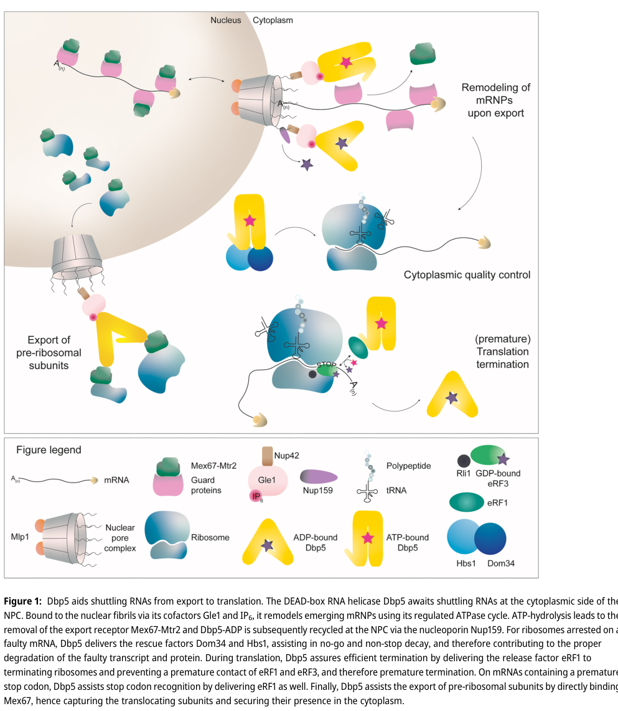

DBP5 is an essential DEAD-box RNA helicase that functions as a key factor in mRNA nuclear export. It acts at the cytoplasmic face of the nuclear pore complex where it remodels mRNP complexes and facilitates mRNA release. The protein is activated by interaction with Gle1 and inositol hexakisphosphate (InsP6) at the NPC. Beyond its primary role in mRNA export, DBP5 also participates in tRNA export and has secondary roles in translation termination.
| GO Term | Evidence | Action | Reason |
|---|---|---|---|
|
GO:0003724
RNA helicase activity
|
IBA
GO_REF:0000033 |
ACCEPT |
Summary: DBP5 is a well-characterized DEAD-box RNA helicase with demonstrated ATP-dependent RNA unwinding activity. The IBA annotation is supported by extensive experimental evidence from multiple species, representing a core molecular function conserved across eukaryotes.
Reason: This is a core function of DBP5. The DEAD-box helicase family is defined by this activity. The protein contains the diagnostic DEAD box motif and Q motif characteristic of this helicase class. IBA reflects legitimate phylogenetic inference of this conserved catalytic domain function.
Supporting Evidence:
PMID:9564047
It is shown here that Dbp5p is an ATP-dependent RNA helicase required for polyadenylated [poly(A)+] RNA export.
PMID:9564048
Dbp5p/Rat8p, a previously uncharacterized member of the DEAD-box family of proteins, is closely related to eukaryotic initiation factor 4A(eIF4A) an RNA helicase essential for protein synthesis initiation.
file:yeast/DBP5/DBP5-deep-research-falcon.md
Dbp5 is a DEAD-box RNA helicase-family protein whose core activity is **RNA-dependent ATP hydrolysis** coupled to **nucleotide-state–dependent conformational cycling**, enabling binding and remodeling of RNA–protein complexes (RNPs) rather than long-range processive duplex unwinding. In the export context, this remodeling function is often described as an **RNPase** activity acting on messenger RNPs at the NPC
|
|
GO:0003729
mRNA binding
|
IBA
GO_REF:0000033 |
KEEP AS NON CORE |
Summary: DBP5 binds mRNA as part of its catalytic mechanism for helicase activity. However, this annotation is overly generic for a protein whose function is specifically remodeling mRNP complexes. The binding represents a means to the mechanistic end of mRNA remodeling and export, not a separate function.
Reason: While DBP5 does bind mRNA, describing this as a separate function obscures the more informative molecular mechanism. DBP5 binds mRNA transiently as substrate for ATP-dependent unwinding during the mRNA export process. The IBA annotation is technically correct but less informative than the actual catalytic function (RNA helicase activity). This should not be listed as a core function alongside the helicase activity, as it is subsidiary to that activity.
Supporting Evidence:
PMID:9564047
It is shown here that Dbp5p is an ATP-dependent RNA helicase required for polyadenylated [poly(A)+] RNA export.
PMID:9564047
Dbp5p may play a role in unloading or remodeling messenger RNA particles (mRNPs) upon arrival in the cytoplasm
|
|
GO:0005634
nucleus
|
IBA
GO_REF:0000033 |
ACCEPT |
Summary: DBP5 localizes to the nucleus and specifically to the nuclear pore complex region. The IBA annotation reflects this well-documented subcellular localization pattern.
Reason: While DBP5 is primarily cytoplasmic, it does accumulate at the nuclear pore complex on the cytoplasmic side and transiently associates with nuclear structures. The IBA annotation is appropriate for phylogenetic inference of documented subcellular localization.
Supporting Evidence:
PMID:9564048
Dbp5p/Rat8p is located within the cytoplasm and concentrated in the perinuclear region. Analysis of the distribution of Dbp5p/Rat8p in yeast strains where nuclear pore complexes are tightly clustered indicated that a fraction of this protein associates with nuclear pore complexes (NPCs).
|
|
GO:0010494
cytoplasmic stress granule
|
IBA
GO_REF:0000033 |
KEEP AS NON CORE |
Summary: DBP5 has been observed in cytoplasmic stress granules, which is consistent with the protein's broader role in mRNA remodeling and processing. This represents a secondary cellular role.
Reason: DBP5's presence in stress granules represents a stress-response localization of the protein rather than a core catalytic function. This is a conditional, non-essential aspect of DBP5 biology. The protein's primary function is mRNA export, with stress granule association being a secondary phenomenon.
Supporting Evidence:
PMID:27251550
Defects in THO/TREX-2 function cause accumulation of novel cytoplasmic mRNP granules
|
|
GO:0016973
poly(A)+ mRNA export from nucleus
|
IBA
GO_REF:0000033 |
ACCEPT |
Summary: DBP5 is a key factor in mRNA export from the nucleus. The poly(A)+ specificity reflects the well-characterized role of DBP5 in the export of mature, polyadenylated mRNAs. The IBA annotation appropriately represents this core function.
Reason: This is a primary core function of DBP5. Extensive experimental evidence demonstrates that DBP5 is essential for mRNA export, specifically acting on poly(A)+ mRNAs at the cytoplasmic face of the nuclear pore complex. The phylogenetic inference is appropriate for this conserved and well-documented function.
Supporting Evidence:
PMID:9564047
Dbp5p is an ATP-dependent RNA helicase required for polyadenylated [poly(A)+] RNA export.
PMID:9564048
In rat8 mutant strains, cells displayed rapid, synchronous accumulation of poly(A)+ RNA in nuclei when shifted to the non-permissive temperature.
file:yeast/DBP5/DBP5-deep-research-falcon.md
The mechanistic focus is on Dbp5-driven removal of export-associated factors such as **Mex67–Mtr2** (major mRNA export receptor) and **Nab2** (poly(A) RNA-binding/export factor), thereby enforcing directionality and enabling cytoplasmic fate decisions
file:yeast/DBP5/DBP5-deep-research-falcon.md
Directionality is established at the **cytoplasmic NPC face**, where Dbp5 activity promotes dissociation of export factors from the mRNP so that the particle **cannot re-enter the nucleus using the same export-binding interactions**
|
|
GO:0000166
nucleotide binding
|
IEA
GO_REF:0000043 |
KEEP AS NON CORE |
Summary: DBP5 is an ATP-dependent enzyme that requires nucleotide binding for catalytic activity. This is a predictable annotation based on the helicase domain and ATP-binding motifs.
Reason: While technically correct, nucleotide binding is a subsidiary property of ATP-dependent enzymes. This is less informative than the actual ATP binding term and should not be emphasized as a core function.
|
|
GO:0003676
nucleic acid binding
|
IEA
GO_REF:0000002 |
KEEP AS NON CORE |
Summary: DBP5 binds nucleic acid (RNA) as part of its helicase mechanism. The InterPro mapping is appropriate for this conserved domain property.
Reason: This is a parent term of RNA binding and is appropriate but redundant with more specific annotations. RNA binding subsumes this annotation.
|
|
GO:0003723
RNA binding
|
IEA
GO_REF:0000043 |
KEEP AS NON CORE |
Summary: DBP5 binds RNA as substrate for helicase activity. This is documented from domain analysis and experimental evidence.
Reason: RNA binding is a mechanistic property subsidiary to the primary helicase activity. Should not be listed as a core function separately from the catalytic activity.
|
|
GO:0003724
RNA helicase activity
|
IEA
GO_REF:0000120 |
ACCEPT |
Summary: DBP5 helicase activity is correctly inferred from domain annotation and sequence homology. This IEA annotation duplicates the IBA and IDA annotations already present.
Reason: While redundant with IBA and IDA annotations for the same term, this IEA annotation is correct and appropriately supported by InterPro mapping. Multiple evidence codes for the same well-established function is acceptable in GO.
|
|
GO:0004386
helicase activity
|
IEA
GO_REF:0000043 |
ACCEPT |
Summary: DBP5 is a helicase with nucleic acid unwinding activity. This is a parent term to RNA helicase activity.
Reason: This is a correct characterization of DBP5 as a helicase. While more general than RNA helicase activity, it appropriately represents the broader catalytic class.
|
|
GO:0005524
ATP binding
|
IEA
GO_REF:0000120 |
ACCEPT |
Summary: DBP5 contains a DEAD box domain with ATP binding site. This binding is essential for the helicase mechanism.
Reason: ATP binding is a core mechanistic feature of DEAD-box helicases and is well-documented in the protein structure and function. This is appropriate to retain.
|
|
GO:0005643
nuclear pore
|
IEA
GO_REF:0000044 |
ACCEPT |
Summary: DBP5 is associated with the nuclear pore complex, specifically on the cytoplasmic face. The subcellular location annotation is appropriate.
Reason: DBP5 is indeed a component of the nuclear pore export machinery. The annotation correctly represents the structural context where the protein operates.
|
|
GO:0005737
cytoplasm
|
IEA
GO_REF:0000120 |
ACCEPT |
Summary: DBP5 localizes primarily to the cytoplasm, where it resides both diffusely and at the nuclear pore complex.
Reason: Appropriate subcellular localization annotation confirmed by experimental data. The cytoplasmic localization is essential for its mRNA export function.
|
|
GO:0010467
gene expression
|
IEA
GO_REF:0000117 |
MARK AS OVER ANNOTATED |
Summary: DBP5 contributes to gene expression by facilitating mRNA export, which is downstream of transcription and essential for protein synthesis.
Reason: While DBP5 is involved in the post-transcriptional steps of gene expression, this annotation is overly broad and generic. DBP5 is not directly involved in transcription, translation initiation, or other early gene expression steps. The term obscures the specific mRNA export function.
|
|
GO:0015031
protein transport
|
IEA
GO_REF:0000043 |
REMOVE |
Summary: DBP5 is annotated as protein transport based on general transport keywords. However, DBP5 specifically transports RNA, not proteins.
Reason: This annotation is mechanistically incorrect. DBP5 facilitates mRNA transport, not protein transport. The mRNA is transported as an mRNP complex, but the cargo is RNA, not protein. This should be removed in favor of more accurate mRNA transport annotations.
|
|
GO:0016787
hydrolase activity
|
IEA
GO_REF:0000043 |
ACCEPT |
Summary: DBP5 is an ATP-dependent enzyme with ATP hydrolysis activity as part of its catalytic mechanism. This parent term is appropriate.
Reason: Hydrolase activity is the correct parent classification for ATP-dependent enzymes including helicases. This annotation accurately represents the enzymatic class.
|
|
GO:0016887
ATP hydrolysis activity
|
IEA
GO_REF:0000116 |
ACCEPT |
Summary: DBP5 catalyzes ATP hydrolysis coupled to RNA unwinding. The Rhea mapping appropriately captures this catalytic activity.
Reason: This accurately represents the ATP hydrolysis catalytic activity. DEAD-box helicases use ATP hydrolysis to power RNA unwinding, making this annotation both appropriate and informative.
|
|
GO:0031965
nuclear membrane
|
IEA
GO_REF:0000044 |
ACCEPT |
Summary: DBP5 associates with the nuclear pore complex, which is embedded in the nuclear membrane. The localization annotation is appropriate.
Reason: The nuclear membrane is the structural context where the nuclear pore complex resides. DBP5 peripheral association with the nuclear pore complex on the cytoplasmic face makes this annotation appropriate.
|
|
GO:0051028
mRNA transport
|
IEA
GO_REF:0000043 |
ACCEPT |
Summary: DBP5 functions in mRNA transport from nucleus to cytoplasm. This process term appropriately captures DBP5's role in mRNA export.
Reason: mRNA transport is an appropriate process annotation for DBP5. While more general than the specific poly(A)+ mRNA export annotation, it correctly characterizes the biological process.
|
|
GO:0005515
protein binding
|
IPI
PMID:15619606 Physical and genetic interactions link the yeast protein Zds... |
REMOVE |
Summary: DBP5 physically interacts with multiple protein partners including Zds1p and Gfd1p (Ymr255p). These protein-protein interactions are documented by experimental methods. However, generic protein binding term is uninformative.
Reason: While the protein binding is documented, this annotation is overly generic and uninformative. The specific binding partners (Zds1p, Gfd1p) are known and documented in UniProt. Rather than generic protein binding, the annotations should focus on the functional roles of these interactions in mRNA export and complex assembly. Generic protein binding terms should be avoided per GO best practices.
Supporting Evidence:
PMID:15619606
2004 Dec 24. Physical and genetic interactions link the yeast protein Zds1p with mRNA nuclear export.
|
|
GO:0005515
protein binding
|
IPI
PMID:16554755 Global landscape of protein complexes in the yeast Saccharom... |
REMOVE |
Summary: Protein binding annotation from large-scale yeast protein interaction study. While interactions are documented, the generic nature of the annotation is not informative.
Reason: Generic protein binding annotations are not recommended per GO guidelines. Large-scale interaction studies should be represented at the level of specific, named binding partners and their functional roles.
Supporting Evidence:
PMID:16554755
Global landscape of protein complexes in the yeast Saccharomyces cerevisiae.
|
|
GO:0005515
protein binding
|
IPI
PMID:19805289 Structure of the C-terminus of the mRNA export factor Dbp5 r... |
REMOVE |
Summary: DBP5 interacts with Gle1p, its primary regulatory partner. This interaction is essential for DBP5 activation and mRNA export function.
Reason: While the Gle1p interaction is critical, generic protein binding obscures this specific and important interaction. This would be better represented as a specific protein binding annotation for Gle1p, or better yet, as the functional consequence (activation by Gle1p and InsP6).
Supporting Evidence:
PMID:19805289
Structure of the C-terminus of the mRNA export factor Dbp5 reveals the interaction surface for the ATPase activator Gle1.
|
|
GO:0005515
protein binding
|
IPI
PMID:21441902 A conserved mechanism of DEAD-box ATPase activation by nucle... |
REMOVE |
Summary: Protein binding annotation from study of DEAD-box ATPase activation mechanism. The specific partners are nucleoporins and Gle1p involved in mRNA export.
Reason: The generic protein binding term obscures the mechanistic importance of these interactions. While interactions are documented, they should be represented through their functional roles in mRNA export rather than as generic protein binding.
Supporting Evidence:
PMID:21441902
A conserved mechanism of DEAD-box ATPase activation by nucleoporins and InsP6 in mRNA export.
|
|
GO:0006409
tRNA export from nucleus
|
IDA
PMID:31453808 A nuclear role for the DEAD-box protein Dbp5 in tRNA export. |
KEEP AS NON CORE |
Summary: Evidence demonstrates that DBP5 has a function in tRNA export from the nucleus,
in addition to its well-characterized mRNA export role. Falcon deep research
(Rajan et al. 2024, eLife) adds biochemical and genetic detail: Dbp5 directly
binds tRNA (Kd ~130-150 nM), but tRNA/dsRNA alone does not stimulate its ATPase;
instead tRNA synergizes with Gle1/InsP6 to fully activate Dbp5, and Dbp5 acts in
a Los1-independent pathway. This is a well-supported additional RNA export
function rather than mere substrate promiscuity.
Reason: The evidence for tRNA export is solid and now mechanistically defined, but it
represents a secondary function relative to the protein's primary and essential
role in bulk poly(A)+ mRNA export. Dbp5 binds structured tRNA directly and is
activated via the same Gle1/InsP6 module used for mRNA export, operating in a
pathway parallel to and independent of the canonical exporter Los1. Retained as
non-core because mRNA export, not tRNA export, defines the essential function.
Supporting Evidence:
PMID:31453808
A nuclear role for the DEAD-box protein Dbp5 in tRNA export.
file:yeast/DBP5/DBP5-deep-research-falcon.md
Dbp5 binds tRNA in vitro with **Kd ~150 nM** (Phe tRNA) and **~130 nM** (mixed tRNA) (Rajan et al., eLife 2024-01, https://doi.org/10.7554/elife.89835).
file:yeast/DBP5/DBP5-deep-research-falcon.md
**tRNA (or dsRNA poly(I:C)) alone does not stimulate Dbp5 ATPase activity**, unlike a typical ssRNA activator (poly(A)). However, **tRNA/dsRNA synergizes with Gle1/InsP6 to fully activate Dbp5**, reaching ~**1.03 ± 0.04 ATP/s** (mixed tRNA with Gle1/InsP6) comparable to ssRNA activation (~**1.11 ± 0.07 ATP/s**)
file:yeast/DBP5/DBP5-deep-research-falcon.md
Rajan et al. (eLife 2024-01) provide genetic and biochemical evidence that Dbp5 functions in tRNA export in a pathway parallel to canonical exporters:
|
|
GO:0003724
RNA helicase activity
|
IDA
PMID:9564047 Dbp5p, a cytosolic RNA helicase, is required for poly(A)+ RN... |
ACCEPT |
Summary: Experimental evidence directly demonstrates DBP5 RNA helicase activity. The IDA annotation with PMID:9564047 is redundant with the IBA and IEA annotations for the same term, but provides direct experimental confirmation.
Reason: Multiple evidence codes for the same well-established function are appropriate. This IDA annotation provides direct experimental confirmation of the helicase activity.
Supporting Evidence:
PMID:9564047
Dbp5p is an ATP-dependent RNA helicase required for polyadenylated [poly(A)+] RNA export.
|
|
GO:0010494
cytoplasmic stress granule
|
IDA
PMID:27251550 Defects in THO/TREX-2 function cause accumulation of novel c... |
KEEP AS NON CORE |
Summary: Experimental data shows DBP5 localizes to cytoplasmic stress granule-like structures under conditions of defective mRNA export.
Reason: This annotation represents a secondary, conditional localization. DBP5 stress granule accumulation occurs in response to mRNA export defects, not as a primary cellular function. Should be marked as non-core.
Supporting Evidence:
PMID:27251550
Defects in THO/TREX-2 function cause accumulation of novel cytoplasmic mRNP granules that can be cleared by autophagy.
|
|
GO:0016973
poly(A)+ mRNA export from nucleus
|
IMP
PMID:27385342 Altered RNA processing and export lead to retention of mRNAs... |
ACCEPT |
Summary: Experimental mutation and phenotypic analysis shows DBP5 is directly involved in mRNA export. Multiple IMP and IDA annotations confirm this core function.
Reason: This is a primary core function confirmed by multiple experimental methods. IMP annotations appropriately reflect the loss-of-function phenotype of DBP5 mutations.
Supporting Evidence:
PMID:27385342
Altered RNA processing and export lead to retention of mRNAs near transcription sites and nuclear pore complexes or within the nucleolus.
|
|
GO:0000822
inositol hexakisphosphate binding
|
IDA
PMID:16783363 Inositol hexakisphosphate and Gle1 activate the DEAD-box pro... |
ACCEPT |
Summary: DBP5 directly binds inositol hexakisphosphate (InsP6), an essential cofactor that activates its ATPase activity at the nuclear pore complex.
Reason: This represents a specific, mechanistically important ligand binding interaction. InsP6 is a cofactor required for DBP5 activation in mRNA export. The annotation appropriately represents this catalytic requirement.
Supporting Evidence:
PMID:16783363
We now propose that Dbp5 activation at NPCs requires Gle1 and InsP6.
file:yeast/DBP5/DBP5-deep-research-falcon.md
Alcázar-Román et al. (JBC 2010-05-28, https://doi.org/10.1074/jbc.M109.082370) describe Gle1 and IP6 as essential for mRNA export by **activating Dbp5 ATPase** and promoting localized mRNP remodeling and directionality; they also report that the same module is required for **proper translation termination**
|
|
GO:0005634
nucleus
|
IDA
PMID:15280434 Stress response in yeast mRNA export factor: reversible chan... |
ACCEPT |
Summary: DBP5 localizes to the nucleus and undergoes stress-dependent relocalization to nuclear regions under ethanol stress.
Reason: Appropriate experimental confirmation of nuclear localization. While DBP5 is primarily cytoplasmic, it does associate with nuclear structures, particularly under stress conditions.
Supporting Evidence:
PMID:15280434
Jul 27. Stress response in yeast mRNA export factor: reversible changes in Rat8p localization are caused by ethanol stress but not heat shock.
|
|
GO:0005737
cytoplasm
|
IDA
PMID:10610322 The RNA export factor Gle1p is located on the cytoplasmic fi... |
ACCEPT |
Summary: DBP5 is predominantly localized to the cytoplasm and is concentrated around the nuclear envelope at the cytoplasmic face of the nuclear pore complex.
Reason: The primary subcellular localization of DBP5 is cytoplasmic. This annotation appropriately reflects the experimental localization data.
Supporting Evidence:
PMID:10610322
immunoelectron microscopy localizations indicate that Gle1p, Rip1p and Rat8p/Dbp5p are present on the NPC cytoplasmic fibrils
|
|
GO:0005737
cytoplasm
|
IDA
PMID:15280434 Stress response in yeast mRNA export factor: reversible chan... |
ACCEPT |
Summary: DBP5 cytoplasmic localization confirmed under stress conditions. Redundant with other cytoplasm annotations but provides condition-specific evidence.
Reason: Multiple lines of evidence confirm cytoplasmic localization under different conditions. Retention of redundant annotations is acceptable.
Supporting Evidence:
PMID:15280434
Jul 27. Stress response in yeast mRNA export factor: reversible changes in Rat8p localization are caused by ethanol stress but not heat shock.
|
|
GO:0005737
cytoplasm
|
IDA
PMID:9564048 Dbp5p/Rat8p is a yeast nuclear pore-associated DEAD-box prot... |
ACCEPT |
Summary: DBP5 is located in the cytoplasm, concentrated in the perinuclear region.
Reason: Multiple evidence codes for the same subcellular localization reflect convergent experimental evidence from independent studies.
Supporting Evidence:
PMID:9564048
Dbp5p/Rat8p is located within the cytoplasm and concentrated in the perinuclear region.
|
|
GO:0005934
cellular bud tip
|
IDA
PMID:19198597 Nuclear transport factor directs localization of protein syn... |
KEEP AS NON CORE |
Summary: DBP5 localizes to the cellular bud tip, possibly involved in directing mRNA and/or translation during mitosis.
Reason: While localization to bud tip is documented, this represents a specialized, conditional cellular location related to cell division. This is a secondary, non-essential aspect of DBP5 cellular distribution.
Supporting Evidence:
PMID:19198597
Nuclear transport factor directs localization of protein synthesis during mitosis.
|
|
GO:0006406
mRNA export from nucleus
|
IMP
PMID:9564048 Dbp5p/Rat8p is a yeast nuclear pore-associated DEAD-box prot... |
ACCEPT |
Summary: Experimental mutation phenotype shows DBP5 is essential for mRNA export from the nucleus. IMP annotation reflects the loss-of-function phenotype.
Reason: This is a primary core function confirmed by classical loss-of-function experiments. The IMP annotation appropriately represents the mutant phenotype.
Supporting Evidence:
PMID:9564048
In rat8 mutant strains, cells displayed rapid, synchronous accumulation of poly(A)+ RNA in nuclei when shifted to the non-permissive temperature.
|
|
GO:0006415
translational termination
|
IGI
PMID:17272721 The DEAD-box RNA helicase Dbp5 functions in translation term... |
KEEP AS NON CORE |
Summary: DBP5 shows genetic interaction with translation termination factors eRF1 and
eRF3, indicating a role in translation termination beyond mRNA export. Falcon
deep research (Querl & Krebber 2023 review) supports a defined mechanism in which
Dbp5 delivers eRF1 to terminating ribosomes and prevents premature eRF1-eRF3
interactions, thereby reducing readthrough. The same Gle1/InsP6 activation module
that supports mRNA export is also required for proper translation termination.
Reason: The genetic interactions are documented, and falcon deep research indicates this
is a direct, mechanistically defined coupled function rather than mere pleiotropy
or an indirect consequence of mRNA export defects: Dbp5 is proposed to deliver
eRF1 to terminating ribosomes and prevent premature eRF1-eRF3 association. It is
retained as non-core because the essential, defining function of Dbp5 is bulk
mRNA export at the NPC, with translation termination being one of several
downstream gene-expression steps that Dbp5 couples.
Supporting Evidence:
PMID:17272721
Dbp5 interacts genetically with both release factors and the polyadenlyate-binding protein Pab1.
file:yeast/DBP5/DBP5-deep-research-falcon.md
Querl & Krebber (Biological Chemistry, published online 2023-07-13, https://doi.org/10.1515/hsz-2023-0130) review evidence that Dbp5 functions in **translation termination**, including a mechanistic model where Dbp5 delivers **eRF1** to terminating ribosomes and prevents premature eRF1–eRF3 interactions, thereby reducing readthrough
file:yeast/DBP5/DBP5-deep-research-falcon.md
Alcázar-Román et al. (JBC 2010-05-28, https://doi.org/10.1074/jbc.M109.082370) describe Gle1 and IP6 as essential for mRNA export by **activating Dbp5 ATPase** and promoting localized mRNP remodeling and directionality; they also report that the same module is required for **proper translation termination**
|
|
GO:0006415
translational termination
|
IPI
PMID:17272721 The DEAD-box RNA helicase Dbp5 functions in translation term... |
KEEP AS NON CORE |
Summary: DBP5 shows direct physical interaction with eRF1, a translation termination
factor. The interaction is specifically detected and characterized. Falcon deep
research supports a model in which Dbp5 delivers eRF1 to terminating ribosomes
and prevents premature eRF1-eRF3 interactions, reducing stop-codon readthrough.
Reason: The physical interaction with eRF1 is documented and falcon deep research places
it in a defined mechanistic model (Dbp5 delivers eRF1 and prevents premature
eRF1-eRF3 association). Translation termination is retained as non-core because
the protein's essential, defining function is bulk mRNA export at the nuclear
pore complex; translation termination is one of the coupled downstream
gene-expression steps.
Supporting Evidence:
PMID:17272721
The DEAD-box RNA helicase Dbp5 functions in translation termination.
file:yeast/DBP5/DBP5-deep-research-falcon.md
Querl & Krebber (Biological Chemistry, published online 2023-07-13, https://doi.org/10.1515/hsz-2023-0130) review evidence that Dbp5 functions in **translation termination**, including a mechanistic model where Dbp5 delivers **eRF1** to terminating ribosomes and prevents premature eRF1–eRF3 interactions, thereby reducing readthrough
|
|
GO:0008186
ATP-dependent activity, acting on RNA
|
IDA
PMID:19805289 Structure of the C-terminus of the mRNA export factor Dbp5 r... |
ACCEPT |
Summary: DBP5 is directly shown to have ATP-dependent RNA-modifying activity. This reflects the core catalytic function of the helicase.
Reason: This annotation appropriately characterizes the ATP-dependent catalytic activity of DBP5 acting on RNA. It is both informative and accurate.
Supporting Evidence:
PMID:19805289
Structure of the C-terminus of the mRNA export factor Dbp5 reveals the interaction surface for the ATPase activator Gle1.
|
|
GO:0044614
nuclear pore cytoplasmic filaments
|
IDA
PMID:10610322 The RNA export factor Gle1p is located on the cytoplasmic fi... |
ACCEPT |
Summary: DBP5 is experimentally localized to the cytoplasmic filaments of the nuclear pore complex, where it functions in mRNA remodeling.
Reason: This annotation accurately represents the specific subcellular microlocalization of DBP5 within the NPC structure. It provides important detail about where the mRNA export activity occurs.
Supporting Evidence:
PMID:10610322
immunoelectron microscopy localizations indicate that Gle1p, Rip1p and Rat8p/Dbp5p are present on the NPC cytoplasmic fibrils
file:yeast/DBP5/DBP5-deep-research-falcon.md
Dbp5 is enriched at the **nuclear rim** and is a key factor on the **cytoplasmic face/cytoplasmic fibrils of the NPC**, where terminal export remodeling is executed
file:yeast/DBP5/DBP5-deep-research-falcon.md
Dbp5 association with NPCs is highly dynamic, with **~0.8 s** average residence time reported by FRAP in yeast
|
The research report should be a detailed narrative explaining the function, biological processes, and localization of the gene product. Citations should be given for all claims.
You should prioritize authoritative reviews and primary scientific literature when conducting research. You can supplement
this with annotations you find in gene/protein databases, but these can be outdated or inaccurate.
We are specifically interested in the primary function of the gene - for enzymes, what reaction is catalyzed, and what is the substrate specificity? For transporters, what is the substrate? For structural proteins or adapters, what is the broader structural role? For signaling molecules, what is the role in the pathway.
We are interested in where in or outside the cell the gene product carries out its function.
We are also interested in the signaling or biochemical pathways in which the gene functions. We are less interested in broad pleiotropic effects, except where these elucidate the precise role.
Include evidence where possible. We are interested in both experimental evidence as well as inference from structure, evolution, or bioinformatic analysis. Precise studies should be prioritized over high-throughput, where available.
The literature summarized here is specifically for Dbp5 (alias Rat8) from Saccharomyces cerevisiae (S288c), an essential DEAD-box ATP-dependent RNA helicase/RNA-dependent ATPase at the nuclear pore complex (NPC), orthologous to metazoan DDX19. Multiple sources explicitly describe Dbp5/Rat8 as a conserved DEAD-box factor concentrated at the nuclear rim/NPC cytoplasmic face and required for RNA export and downstream gene-expression steps, consistent with UniProt P20449 and the DDX19/Dbp5 family assignment (https://doi.org/10.1515/hsz-2023-0130; https://doi.org/10.1074/jbc.M109.082370; https://doi.org/10.1101/gad.2041611; https://doi.org/10.1101/gad.2040611; https://doi.org/10.7554/elife.89835). (querl2023thedeadboxrna pages 1-3, alcazarroman2010controlofmrna pages 1-2, hodge2011thedbp5cycle pages 9-10, noble2011thedbp5cycle pages 7-8, rajan2024gle1isrequired pages 10-12)
Dbp5 is a DEAD-box RNA helicase-family protein whose core activity is RNA-dependent ATP hydrolysis coupled to nucleotide-state–dependent conformational cycling, enabling binding and remodeling of RNA–protein complexes (RNPs) rather than long-range processive duplex unwinding. In the export context, this remodeling function is often described as an RNPase activity acting on messenger RNPs at the NPC (querl2023thedeadboxrna pages 1-3, rajan2023investigatingarole pages 21-25).
In the mRNA export field, “mRNP remodeling” refers to localized restructuring/displacement of specific proteins from exported mRNA at (or immediately after) NPC transit. The mechanistic focus is on Dbp5-driven removal of export-associated factors such as Mex67–Mtr2 (major mRNA export receptor) and Nab2 (poly(A) RNA-binding/export factor), thereby enforcing directionality and enabling cytoplasmic fate decisions (alcazarroman2010controlofmrna pages 1-2, querl2023thedeadboxrna pages 1-3, rajan2023investigatingarole pages 25-29, noble2011thedbp5cycle pages 7-8).
mRNAs are exported by Mex67–Mtr2 interactions with NPC components. Directionality is established at the cytoplasmic NPC face, where Dbp5 activity promotes dissociation of export factors from the mRNP so that the particle cannot re-enter the nucleus using the same export-binding interactions (alcazarroman2010controlofmrna pages 1-2, querl2023thedeadboxrna pages 1-3, rajan2023investigatingarole pages 25-29).
Dbp5 catalyzes ATP hydrolysis (ATP → ADP + Pi) in an RNA-dependent manner, with its remodeling function associated with conformational changes across its nucleotide cycle (rajan2023investigatingarole pages 21-25, noble2011thedbp5cycle pages 7-8).
Quantitative enzymology and substrate-response features reported in the retrieved sources include:
- Basal ATPase rate reported in summarized mechanistic literature: ~0.04–0.14 s⁻¹, with RNA stimulating the ATPase cycle approximately 6–20-fold (rajan2023investigatingarole pages 21-25).
- RNA-binding is nucleotide-state sensitive; one cited assay summary reports AMP-PNP-bound RNA Kd ~40 nM, while RNA binding was not detectable with ADP in that context (rajan2023investigatingarole pages 21-25).
- Dbp5 shows a preference for ADP over ATP (reported as ~0.4 mM vs ~4 mM in a summarized mechanistic excerpt) (rajan2023investigatingarole pages 21-25).
A key 2024 development is evidence that Dbp5 can directly bind structured RNAs and participate in their export regulation:
- Dbp5 binds tRNA in vitro with Kd ~150 nM (Phe tRNA) and ~130 nM (mixed tRNA) (Rajan et al., eLife 2024-01, https://doi.org/10.7554/elife.89835). (rajan2024gle1isrequired pages 10-12)
- tRNA (or dsRNA poly(I:C)) alone does not stimulate Dbp5 ATPase activity, unlike a typical ssRNA activator (poly(A)). However, tRNA/dsRNA synergizes with Gle1/InsP6 to fully activate Dbp5, reaching ~1.03 ± 0.04 ATP/s (mixed tRNA with Gle1/InsP6) comparable to ssRNA activation (~1.11 ± 0.07 ATP/s) (rajan2024gle1isrequired pages 10-12).
- RNase T1 controls support that the Gle1/InsP6 + tRNA activation is attributable to structured RNA rather than ssRNA contamination (rajan2024gle1isrequired pages 10-12).
Interpretation: Dbp5 is best understood as an RNA-dependent ATPase whose productive hydrolysis is highly dependent on RNA topology and cofactor context; structured RNA can be a functional substrate when the NPC-anchored activation module (Gle1/InsP6) is present (rajan2024gle1isrequired pages 10-12, rajan2024gle1isrequired pages 12-14).
Dbp5 is enriched at the nuclear rim and is a key factor on the cytoplasmic face/cytoplasmic fibrils of the NPC, where terminal export remodeling is executed (querl2023thedeadboxrna pages 1-3, alcazarroman2010controlofmrna pages 1-2, hodge2011thedbp5cycle pages 9-10).
Dynamic behavior at NPCs is central to its mechanism:
- Dbp5 association with NPCs is highly dynamic, with ~0.8 s average residence time reported by FRAP in yeast (Hodge et al., Genes & Dev. 2011-05, https://doi.org/10.1101/gad.2041611). (hodge2011thedbp5cycle pages 9-10)
Export remodeling by Dbp5 is proposed to occur at/after mRNP exit, consistent with rapid mRNP transit times:
- Reporter mRNP translocation through NPCs has been reported as ~0.2 s and <0.5 s in live-cell imaging studies discussed in the mechanistic framework (hodge2011thedbp5cycle pages 9-10).
- A mechanistic synthesis excerpt additionally notes conceptual rates such as an NPC exporting an mRNP every ~2–6 s, with transport lasting ~0.2 s (rajan2023investigatingarole pages 25-29).
At the cytoplasmic NPC face, Gle1 bound to IP6 acts as a principal Dbp5 ATPase coactivator required for full potentiation of Dbp5 function during export and translation-linked processes:
- Alcázar-Román et al. (JBC 2010-05-28, https://doi.org/10.1074/jbc.M109.082370) describe Gle1 and IP6 as essential for mRNA export by activating Dbp5 ATPase and promoting localized mRNP remodeling and directionality; they also report that the same module is required for proper translation termination (alcazarroman2010controlofmrna pages 1-2).
- Mechanistic genetic analysis indicates the Gle1–Dbp5 interaction is limiting/critical for export; dominant-negative RNA-binding mutants inhibit export by competing for Gle1 (Hodge et al. 2011) (hodge2011thedbp5cycle pages 9-10).
Nup42’s key role is not simply Gle1 localization but enhancement of Gle1-dependent stimulation of the RNA-dependent Dbp5 ATPase:
- Adams et al. (Traffic 2017-10, https://doi.org/10.1111/tra.12526) report that Nup42/hNup42 enhances Gle1 stimulation of the RNA-dependent Dbp5/DDX19B ATPase, and that a nup42-CTD/gle1-CTD/Dbp5 trimeric complex forms in the presence of IP6 (adams2017nup42andip6 pages 6-7).
- They identify a minimal Nup42 Gle1-binding peptide of 17 amino acids (residues 408–424) and propose that Nup42 may couple Gle1–IP6 activation to the presence of Mex67-bound mRNPs (adams2017nup42andip6 pages 6-7).
Nup159 tethers Dbp5 to the NPC cytoplasmic filaments and is central to recycling by promoting ADP release, enabling additional rounds of remodeling:
- Noble et al. (Genes & Dev. 2011-05, https://doi.org/10.1101/gad.2040611) conclude that “a primary role for Nup159 in the Dbp5 cycle is to facilitate ADP release,” and show that ADP binding alone is sufficient to drive in vitro remodeling of Nab2-RNPs under their assay conditions (noble2011thedbp5cycle pages 7-8).
- A mechanistic synthesis excerpt reports that Dbp5–Nup159 affinity is nucleotide dependent (weakened in ADP/ATP states), with cited in vitro values changing from ~20 nM to ~0.6 μM (Dbp5ADP) and ~1 μM (Dbp5ATP) (rajan2023investigatingarole pages 25-29).
Dbp5 is required for bulk mRNA export and acts at the NPC cytoplasmic face to remodel mRNPs by displacing export factors such as Mex67 and Nab2 (alcazarroman2010controlofmrna pages 1-2, querl2023thedeadboxrna pages 1-3, noble2011thedbp5cycle pages 7-8).
Dominant-negative and cycling mutants support a stepwise pathway:
- ATP binding is required for efficient NPC association, and RNA-binding–defective mutants can still localize at NPCs but inhibit export by sequestering Gle1 (hodge2011thedbp5cycle pages 9-10).
- Expression of a dominant-negative human analog (R372G) increases peripheral mRNP accumulation by ~10-fold, illustrating that interference with this step stalls mRNPs at/near NPCs (hodge2011thedbp5cycle pages 9-10).
A key expert synthesis from 2023 emphasizes that Dbp5 couples export to downstream translation control:
- Querl & Krebber (Biological Chemistry, published online 2023-07-13, https://doi.org/10.1515/hsz-2023-0130) review evidence that Dbp5 functions in translation termination, including a mechanistic model where Dbp5 delivers eRF1 to terminating ribosomes and prevents premature eRF1–eRF3 interactions, thereby reducing readthrough (querl2023thedeadboxrna pages 1-3, querl2023thedeadboxrna media ccdac9cd).
- Alcázar-Román et al. (2010) explicitly state Dbp5, Gle1, and IP6 are required for proper translation termination in addition to mRNA export (alcazarroman2010controlofmrna pages 1-2).
Querl & Krebber (2023) summarize a model in which Dbp5 contributes to no-go decay (NGD) and non-stop decay (NSD) by delivering rescue factors Dom34/Hbs1 to stalled ribosomes; subsequent hydrolysis steps coordinate rescue and transcript clearance (querl2023thedeadboxrna pages 4-5, querl2023thedeadboxrna media ccdac9cd).
Rajan et al. (eLife 2024-01) provide genetic and biochemical evidence that Dbp5 functions in tRNA export in a pathway parallel to canonical exporters:
- Dbp5 functions parallel to Los1 (and Gle1 supports pre-tRNA export), with a reported ~five-fold increase in a pre-tRNA processing intermediate/precursor ratio in los1Δ gle1-4 compared with los1Δ after 4 h at 37°C (rajan2024gle1isrequired pages 10-12, rajan2024gle1isrequired pages 12-14).
- They propose that tRNA binding without ATPase stimulation could allow Dbp5 to escort/hold structured RNA until reaching NPC-localized Gle1/InsP6 for activation (rajan2024gle1isrequired pages 10-12, rajan2024gle1isrequired pages 12-14).
Recent synthesis also places Dbp5 in pre-ribosomal export, with a model distinct from canonical mRNA remodeling:
- Rajan et al. (2024) explicitly contrast mRNA/tRNA export (requiring Gle1/InsP6 activation and remodeling at NPCs) with pre-ribosomal export, where Dbp5 ATPase stimulation may be dispensable and export factors may persist on the particle post-export (rajan2024gle1isrequired pages 12-14).
- Querl & Krebber (2023) depict a model where Dbp5 binds Mex67 on pre-ribosomal particles in the cytoplasm, “capturing” translocating subunits (querl2023thedeadboxrna media ccdac9cd).
The 2023 minireview frames Dbp5 as a “master regulator” connecting mRNA export, translation termination, and quality control (Biological Chemistry, published online 2023-07-13, https://doi.org/10.1515/hsz-2023-0130). It provides an integrated conceptual model of Dbp5 at the NPC and on cytoplasmic ribosomes (querl2023thedeadboxrna pages 1-3, querl2023thedeadboxrna media ccdac9cd).
The 2024 eLife paper extends Dbp5 function beyond mRNA remodeling by demonstrating:
- direct tRNA binding (Kd ~130–150 nM),
- lack of ATPase stimulation by structured RNA alone,
- strong Gle1/InsP6-dependent synergy restoring full ATPase activity (~1 ATP/s),
- in vivo genetic evidence for a Los1-independent pathway requiring the regulated Dbp5 ATPase cycle (https://doi.org/10.7554/elife.89835). (rajan2024gle1isrequired pages 10-12, rajan2024gle1isrequired pages 12-14)
Dbp5 (and the conserved DDX19 module) is widely used as a paradigm for spatially gated mRNP remodeling at the nuclear pore, because it is one of the most mechanistically defined cases where an RNA-dependent ATPase is activated by NPC-localized cofactors (Gle1/InsP6) and recycled by a nucleoporin (Nup159) (alcazarroman2010controlofmrna pages 1-2, hodge2011thedbp5cycle pages 9-10, noble2011thedbp5cycle pages 7-8).
Practical research implementations supported by the cited sources include:
- In vitro reconstitution/enzymology of Dbp5 ATPase activation by defined RNAs and cofactors, including the structured-RNA synergy revealed in 2024 (rajan2024gle1isrequired pages 10-12).
- Live-cell imaging / FRAP to quantify Dbp5 NPC residence (~0.8 s) and relate it to export kinetics (hodge2011thedbp5cycle pages 9-10).
- Genetic dissection using dominant-negative mutants competing for Gle1 and synthetic interactions (hodge2011thedbp5cycle pages 9-10).
A non-exhaustive quantitative summary (all values drawn from retrieved text excerpts) includes:
- Dbp5 ATPase kinetics: basal ~0.04–0.14 s⁻¹; RNA stimulation ~6–20× (rajan2023investigatingarole pages 21-25).
- Structured RNA binding/activation (2024): tRNA Kd ~130–150 nM; Gle1/InsP6+tRNA ATPase ~1.03 ± 0.04 ATP/s; ssRNA (pA) with Gle1/InsP6 ~1.11 ± 0.07 ATP/s (rajan2024gle1isrequired pages 10-12).
- NPC dynamics: Dbp5 average NPC residence ~0.8 s (FRAP) (hodge2011thedbp5cycle pages 9-10).
- Transport times discussed in mechanistic framework: mRNP translocation ~0.2 s and <0.5 s (hodge2011thedbp5cycle pages 9-10).
- Regulatory complex feature: minimal Nup42 Gle1-binding peptide is 17 aa (408–424) (adams2017nup42andip6 pages 6-7).
- Genetic/processing effect (2024): los1Δ gle1-4 shows ~5-fold increase in a pre-tRNA processing ratio relative to los1Δ alone after 4 h at 37°C (rajan2024gle1isrequired pages 10-12, rajan2024gle1isrequired pages 12-14).
The following table consolidates Dbp5’s functional roles, partners, localization, quantitative data, and references.
| Biological role/process | Molecular function / mechanistic concept | Key partners/regulators | Cellular localization | Key quantitative data | Evidence type | Key reference with publication date and URL |
|---|---|---|---|---|---|---|
| Identity / core enzymology | Essential DEAD-box ATPase/RNA helicase (RNPase) that uses nucleotide-dependent conformational cycling to bind RNA and remodel RNA–protein complexes; ATP-bound state has higher RNA affinity than ADP-bound state, and ATP hydrolysis/conversion to ADP is linked to remodeling competence (rajan2023investigatingarole pages 21-25, hodge2011thedbp5cycle pages 9-10, noble2011thedbp5cycle pages 7-8) | ATP, RNA; regulated by Gle1-InsP6 and Nup159 (rajan2023investigatingarole pages 21-25, noble2011thedbp5cycle pages 7-8) | Nucleus, cytoplasm, prominent enrichment at nuclear rim / cytoplasmic face of NPC (querl2023thedeadboxrna pages 1-3, rajan2023investigatingarole pages 17-21) | Basal ATPase ~0.04–0.14 s⁻¹; RNA stimulation ~6–20-fold; Dbp5 favors ADP ~0.4 mM over ATP ~4 mM; AMP-PNP-bound RNA-binding K_d ~40 nM; RNA binding not detectable with ADP in cited assay (rajan2023investigatingarole pages 21-25) | Biochemistry, structural inference, review | Querl & Krebber, 2023-07-13, https://doi.org/10.1515/hsz-2023-0130 ; mechanistic synthesis from Rajan thesis excerpts 2023 (rajan2023investigatingarole pages 21-25) |
| Bulk mRNA export / export directionality | Dbp5 remodels emerging mRNPs at the cytoplasmic NPC face, removing export factors to prevent nuclear re-entry and enforce one-way export; remodeling includes displacement/removal of Mex67-Mtr2 and Nab2 from exported mRNPs (alcazarroman2010controlofmrna pages 1-2, querl2023thedeadboxrna pages 1-3, rajan2023investigatingarole pages 25-29, rajan2023investigatingarolea pages 25-29) | Mex67-Mtr2, Nab2, Gle1, InsP6/IP6, Nup42, Nup159 (alcazarroman2010controlofmrna pages 1-2, querl2023thedeadboxrna pages 1-3, adams2017nup42andip6 pages 6-7) | Cytoplasmic fibrils / cytoplasmic side of NPC (alcazarroman2010controlofmrna pages 1-2, querl2023thedeadboxrna pages 1-3) | Reporter mRNP translocation through NPC reported as ~0.2 s and <0.5 s; Dbp5 residence at NPC ~0.8 s by FRAP; NPC exports an mRNP every ~2–6 s (hodge2011thedbp5cycle pages 9-10, rajan2023investigatingarole pages 25-29) | Genetics, imaging, biochemistry, review | Hodge et al., 2011-05, https://doi.org/10.1101/gad.2041611 ; Alcázar-Román et al., 2010-05-28, https://doi.org/10.1074/jbc.M109.082370 ; Querl & Krebber, 2023-07-13, https://doi.org/10.1515/hsz-2023-0130 |
| mRNP remodeling reaction | In this context, “mRNP remodeling” means Dbp5-driven displacement/restructuring of mRNP components, especially release of export adaptors from RNA; in vitro, ADP-bound/conversion-to-ADP states are remodeling-competent for Nab2-RNP remodeling (noble2011thedbp5cycle pages 7-8, rajan2023investigatingarole pages 25-29) | Nab2, RNA, nucleotide state; Gle1-InsP6 promotes productive cycling (noble2011thedbp5cycle pages 7-8, rajan2023investigatingarole pages 21-25) | Cytoplasmic NPC face (rajan2024gle1isrequired pages 12-14, lari2019investigationofmrnp pages 154-157) | Initial Dbp5–ADP on-rate estimate in in vitro remodeling assay: ~7.3% of total ADP bound per min; distinct Dbp5-ADP CD peak at ~260–270 nm (noble2011thedbp5cycle pages 7-8) | In vitro biochemistry, biophysics | Noble et al., 2011-05, https://doi.org/10.1101/gad.2040611 |
| Gle1 / InsP6-dependent ATPase activation | Gle1 bound to InsP6/IP6 is the principal activator/coactivator of Dbp5 ATPase at the NPC; promotes ATP binding/stimulation and supports full potentiation required for mRNA export and translation termination (alcazarroman2010controlofmrna pages 1-2, hodge2011thedbp5cycle pages 9-10, noble2011thedbp5cycle pages 7-8) | Gle1, InsP6/IP6, RNA; coordinated by Nup42 (alcazarroman2010controlofmrna pages 1-2, adams2017nup42andip6 pages 6-7) | Cytoplasmic side of NPC, where Gle1 localizes (alcazarroman2010controlofmrna pages 1-2) | In structured-RNA assays, Gle1/InsP6 raises Dbp5 ATPase to 1.03 ± 0.04 ATP/s with mixed tRNA vs 1.11 ± 0.07 ATP/s with ssRNA; with RNase T1-treated tRNA, activity remains 1.18 ± 0.19 ATP/s (vs 1.19 ± 0.11 ATP/s untreated), showing activation depends on structured RNA rather than ssRNA contamination (rajan2024gle1isrequired pages 10-12) | Biochemistry, genetics | Alcázar-Román et al., 2010-05-28, https://doi.org/10.1074/jbc.M109.082370 ; Rajan et al., 2024-01, https://doi.org/10.7554/elife.89835 |
| Nup159-regulated nucleotide recycling | Nup159 tethers Dbp5 at NPC cytoplasmic filaments and primarily facilitates ADP release / recycling after remodeling; Nup159 binding is incompatible with RNA binding and helps reset the cycle (noble2011thedbp5cycle pages 7-8, hodge2011thedbp5cycle pages 9-10, rajan2023investigatingarole pages 25-29) | Nup159, Dbp5-ADP, Gle1 (interaction weakened by Nup159 in cited synthesis) (noble2011thedbp5cycle pages 7-8, rajan2023investigatingarole pages 25-29) | NPC cytoplasmic filaments (hodge2011thedbp5cycle pages 9-10, querl2023thedeadboxrna pages 1-3) | Dbp5–Nup159 affinity changes from about ~20 nM to ~0.6 μM for Dbp5-ADP and ~1 μM for Dbp5-ATP in cited in vitro analyses; altered ADP-binding mutant bypasses Nup159 requirement (rajan2023investigatingarole pages 25-29, noble2011thedbp5cycle pages 7-8) | Biochemistry, genetics, FRAP/imaging | Noble et al., 2011-05, https://doi.org/10.1101/gad.2040611 ; Hodge et al., 2011-05, https://doi.org/10.1101/gad.2041611 |
| Nup42 coordination of export remodeling | Nup42 does not primarily localize Gle1 but instead enhances Gle1-mediated stimulation of RNA-dependent Dbp5 ATPase; supports formation of a Nup42-CTD/Gle1-CTD/Dbp5 regulatory complex and couples remodeling to Mex67-bound mRNPs (adams2017nup42andip6 pages 6-7) | Nup42, Gle1, InsP6/IP6, Dbp5, Mex67-bound mRNPs (adams2017nup42andip6 pages 6-7) | Cytoplasmic NPC face (adams2017nup42andip6 pages 6-7) | Minimal Gle1-binding peptide in Nup42 is 17 aa (residues 408–424); no direct soluble Nup42–Dbp5 interaction detected in cited assay (adams2017nup42andip6 pages 6-7) | Biochemistry, cell biology | Adams et al., 2017-10, https://doi.org/10.1111/tra.12526 |
| tRNA export (recent extension) | Dbp5 directly binds tRNA but tRNA alone does not stimulate ATPase; instead, tRNA + Gle1/InsP6 synergistically activates Dbp5, supporting a parallel Dbp5-dependent tRNA export pathway independent of Los1 (rajan2024gle1isrequired pages 10-12, rajan2024gle1isrequired pages 12-14, rajan2024gle1isrequired pages 21-22) | tRNA, Gle1, InsP6/IP6, Los1-independent pathway; not dependent on Los1/Msn5/Mex67 for Dbp5 recruitment to tRNA in vivo (rajan2024gle1isrequired pages 21-22, rajan2024gle1isrequired pages 12-14) | Likely exported through NPC with activation at cytoplasmic face (rajan2024gle1isrequired pages 10-12, rajan2024gle1isrequired pages 12-14) | tRNA-binding K_d ~150 nM (Phe tRNA) and ~130 nM (mixed tRNA); tRNA alone does not stimulate ATPase, whereas with Gle1/InsP6 ATPase reaches 1.03 ± 0.04 ATP/s; los1Δ gle1-4 causes ~5-fold increase in pre-tRNA Ile UAU intermediate/precursor ratio after 4 h at 37°C (rajan2024gle1isrequired pages 10-12, rajan2024gle1isrequired pages 12-14) | In vitro biochemistry, EMSA/fluorescence polarization, yeast genetics | Rajan et al., 2024-01, https://doi.org/10.7554/elife.89835 |
| Translation termination | Dbp5 is required for efficient translation termination; model from yeast studies/review: Dbp5 delivers eRF1 to terminating ribosomes and prevents premature eRF1–eRF3 association, thereby reducing readthrough (querl2023thedeadboxrna pages 1-3, querl2023thedeadboxrna media ccdac9cd, rajan2023investigatingarolea pages 34-38) | eRF1, eRF3, Gle1, InsP6/IP6 (querl2023thedeadboxrna media ccdac9cd, rajan2023investigatingarolea pages 34-38) | Cytoplasm / translating ribosomes (querl2023thedeadboxrna pages 1-3, querl2023thedeadboxrna media ccdac9cd) | No direct kinetic constant in provided contexts; functional requirement supported by genetics and mechanistic review (querl2023thedeadboxrna pages 1-3, rajan2023investigatingarolea pages 34-38) | Genetics, review | Querl & Krebber, 2023-07-13, https://doi.org/10.1515/hsz-2023-0130 ; Alcázar-Román et al., 2010-05-28, https://doi.org/10.1074/jbc.M109.082370 |
| Cytoplasmic mRNA surveillance (NGD/NSD) | Proposed role in no-go decay (NGD) and non-stop decay (NSD) by delivering Dom34/Hbs1 to stalled ribosomes; ATP/GTP hydrolysis steps then enable rescue and subunit splitting (querl2023thedeadboxrna pages 4-5, querl2023thedeadboxrna media ccdac9cd) | Dom34, Hbs1, Rli1 (querl2023thedeadboxrna pages 4-5, querl2023thedeadboxrna media ccdac9cd) | Cytoplasm, stalled ribosomes (querl2023thedeadboxrna pages 4-5, querl2023thedeadboxrna media ccdac9cd) | No supported numeric kinetic constants in provided contexts (querl2023thedeadboxrna pages 4-5) | In vivo/in vitro binding studies summarized in review | Querl & Krebber, 2023-07-13, https://doi.org/10.1515/hsz-2023-0130 |
| Pre-ribosomal subunit export | Dbp5 also contributes to pre-ribosomal subunit export; review model suggests direct Mex67 binding captures translocating subunits in cytoplasm, and this role may be less dependent on canonical helicase remodeling than mRNA export (rajan2024gle1isrequired pages 12-14, querl2023thedeadboxrna media ccdac9cd, rajan2023investigatingarolea pages 106-108) | Mex67, pre-ribosomal particles (querl2023thedeadboxrna media ccdac9cd, rajan2023investigatingarolea pages 106-108) | Nuclear export route / cytoplasmic side of NPC (querl2023thedeadboxrna media ccdac9cd) | No quantitative values supported in provided contexts (rajan2024gle1isrequired pages 12-14, querl2023thedeadboxrna media ccdac9cd) | Review, prior genetics/cell biology summarized in review | Querl & Krebber, 2023-07-13, https://doi.org/10.1515/hsz-2023-0130 |
Table: This table summarizes the experimentally supported functions, mechanisms, partners, localization, and quantitative measurements for Saccharomyces cerevisiae Dbp5/Rat8 (UniProt P20449). It is useful as a compact evidence map linking Dbp5’s ATPase cycle to mRNA export, tRNA export, translation termination, and related RNA quality-control roles.
A schematic summarizing Dbp5’s roles across export, translation termination, and quality control is provided in Figure 1 of Querl & Krebber (2023) (querl2023thedeadboxrna media ccdac9cd).
References
(querl2023thedeadboxrna pages 1-3): Luisa Querl and Heike Krebber. The dead-box rna helicase dbp5 is a key protein that couples multiple steps in gene expression. Biological Chemistry, 404:845-850, Jul 2023. URL: https://doi.org/10.1515/hsz-2023-0130, doi:10.1515/hsz-2023-0130. This article has 7 citations and is from a peer-reviewed journal.
(alcazarroman2010controlofmrna pages 1-2): Abel R. Alcázar-Román, Timothy A. Bolger, and Susan R. Wente. Control of mrna export and translation termination by inositol hexakisphosphate requires specific interaction with gle1. Journal of Biological Chemistry, 285:16683-16692, May 2010. URL: https://doi.org/10.1074/jbc.m109.082370, doi:10.1074/jbc.m109.082370. This article has 95 citations and is from a domain leading peer-reviewed journal.
(hodge2011thedbp5cycle pages 9-10): Christine A. Hodge, Elizabeth J. Tran, Kristen N. Noble, Abel R. Alcazar-Roman, Rakefet Ben-Yishay, John J. Scarcelli, Andrew W. Folkmann, Yaron Shav-Tal, Susan R. Wente, and Charles N. Cole. The dbp5 cycle at the nuclear pore complex during mrna export i: dbp5 mutants with defects in rna binding and atp hydrolysis define key steps for nup159 and gle1. Genes & Development, 25:1052-1064, May 2011. URL: https://doi.org/10.1101/gad.2041611, doi:10.1101/gad.2041611. This article has 124 citations and is from a highest quality peer-reviewed journal.
(noble2011thedbp5cycle pages 7-8): Kristen N. Noble, Elizabeth J. Tran, Abel R. Alcázar-Román, Christine A. Hodge, Charles N. Cole, and Susan R. Wente. The dbp5 cycle at the nuclear pore complex during mrna export ii: nucleotide cycling and mrnp remodeling by dbp5 are controlled by nup159 and gle1. Genes & development, 25 10:1065-77, May 2011. URL: https://doi.org/10.1101/gad.2040611, doi:10.1101/gad.2040611. This article has 137 citations and is from a highest quality peer-reviewed journal.
(rajan2024gle1isrequired pages 10-12): Arvind Arul Nambi Rajan, Ryuta Asada, and Ben Montpetit. Gle1 is required for trna to stimulate dbp5 atpase activity in vitro and promote dbp5-mediated trna export in vivo in saccharomyces cerevisiae. eLife, Jan 2024. URL: https://doi.org/10.7554/elife.89835, doi:10.7554/elife.89835. This article has 1 citations and is from a domain leading peer-reviewed journal.
(rajan2023investigatingarole pages 21-25): A Arul Nambi Rajan. Investigating a role for the dead-box protein 5 (dbp5) in trna regulation. Unknown journal, 2023.
(rajan2023investigatingarole pages 25-29): A Arul Nambi Rajan. Investigating a role for the dead-box protein 5 (dbp5) in trna regulation. Unknown journal, 2023.
(rajan2024gle1isrequired pages 12-14): Arvind Arul Nambi Rajan, Ryuta Asada, and Ben Montpetit. Gle1 is required for trna to stimulate dbp5 atpase activity in vitro and promote dbp5-mediated trna export in vivo in saccharomyces cerevisiae. eLife, Jan 2024. URL: https://doi.org/10.7554/elife.89835, doi:10.7554/elife.89835. This article has 1 citations and is from a domain leading peer-reviewed journal.
(adams2017nup42andip6 pages 6-7): Rebecca L. Adams, Aaron C. Mason, Laura Glass, Aditi, and Susan R. Wente. Nup42 and
(querl2023thedeadboxrna media ccdac9cd): Luisa Querl and Heike Krebber. The dead-box rna helicase dbp5 is a key protein that couples multiple steps in gene expression. Biological Chemistry, 404:845-850, Jul 2023. URL: https://doi.org/10.1515/hsz-2023-0130, doi:10.1515/hsz-2023-0130. This article has 7 citations and is from a peer-reviewed journal.
(querl2023thedeadboxrna pages 4-5): Luisa Querl and Heike Krebber. The dead-box rna helicase dbp5 is a key protein that couples multiple steps in gene expression. Biological Chemistry, 404:845-850, Jul 2023. URL: https://doi.org/10.1515/hsz-2023-0130, doi:10.1515/hsz-2023-0130. This article has 7 citations and is from a peer-reviewed journal.
(rajan2023investigatingarole pages 17-21): A Arul Nambi Rajan. Investigating a role for the dead-box protein 5 (dbp5) in trna regulation. Unknown journal, 2023.
(rajan2023investigatingarolea pages 25-29): A Arul Nambi Rajan. Investigating a role for the dead-box protein 5 (dbp5) in trna regulation. Unknown journal, 2023.
(lari2019investigationofmrnp pages 154-157): Azra Lari. Investigation of mrnp export kinetics and gene expression regulation by the dead-box protein dbp5p in saccharomyces cerevisiae. Text, Jan 2019. URL: https://doi.org/10.7939/r3-4p4c-vj08, doi:10.7939/r3-4p4c-vj08. This article has 0 citations and is from a peer-reviewed journal.
(rajan2024gle1isrequired pages 21-22): Arvind Arul Nambi Rajan, Ryuta Asada, and Ben Montpetit. Gle1 is required for trna to stimulate dbp5 atpase activity in vitro and promote dbp5-mediated trna export in vivo in saccharomyces cerevisiae. eLife, Jan 2024. URL: https://doi.org/10.7554/elife.89835, doi:10.7554/elife.89835. This article has 1 citations and is from a domain leading peer-reviewed journal.
(rajan2023investigatingarolea pages 34-38): A Arul Nambi Rajan. Investigating a role for the dead-box protein 5 (dbp5) in trna regulation. Unknown journal, 2023.
(rajan2023investigatingarolea pages 106-108): A Arul Nambi Rajan. Investigating a role for the dead-box protein 5 (dbp5) in trna regulation. Unknown journal, 2023.

---
id: P20449
gene_symbol: DBP5
product_type: PROTEIN
status: INITIALIZED
taxon:
id: NCBITaxon:559292
label: Saccharomyces cerevisiae
description: DBP5 is an essential DEAD-box RNA helicase that functions as a key factor
in mRNA nuclear export. It acts at the cytoplasmic face of the nuclear pore complex
where it remodels mRNP complexes and facilitates mRNA release. The protein is activated
by interaction with Gle1 and inositol hexakisphosphate (InsP6) at the NPC. Beyond
its primary role in mRNA export, DBP5 also participates in tRNA export and has secondary
roles in translation termination.
existing_annotations:
- term:
id: GO:0003724
label: RNA helicase activity
evidence_type: IBA
original_reference_id: GO_REF:0000033
review:
summary: DBP5 is a well-characterized DEAD-box RNA helicase with demonstrated
ATP-dependent RNA unwinding activity. The IBA annotation is supported by extensive
experimental evidence from multiple species, representing a core molecular
function conserved across eukaryotes.
action: ACCEPT
reason: This is a core function of DBP5. The DEAD-box helicase family is defined
by this activity. The protein contains the diagnostic DEAD box motif and Q
motif characteristic of this helicase class. IBA reflects legitimate phylogenetic
inference of this conserved catalytic domain function.
supported_by:
- reference_id: PMID:9564047
supporting_text: It is shown here that Dbp5p is an ATP-dependent RNA helicase
required for polyadenylated [poly(A)+] RNA export.
- reference_id: PMID:9564048
supporting_text: Dbp5p/Rat8p, a previously uncharacterized member of the
DEAD-box family of proteins, is closely related to eukaryotic initiation
factor 4A(eIF4A) an RNA helicase essential for protein synthesis initiation.
- reference_id: file:yeast/DBP5/DBP5-deep-research-falcon.md
supporting_text: |-
Dbp5 is a DEAD-box RNA helicase-family protein whose core activity is **RNA-dependent ATP hydrolysis** coupled to **nucleotide-state–dependent conformational cycling**, enabling binding and remodeling of RNA–protein complexes (RNPs) rather than long-range processive duplex unwinding. In the export context, this remodeling function is often described as an **RNPase** activity acting on messenger RNPs at the NPC
- term:
id: GO:0003729
label: mRNA binding
evidence_type: IBA
original_reference_id: GO_REF:0000033
review:
summary: DBP5 binds mRNA as part of its catalytic mechanism for helicase activity.
However, this annotation is overly generic for a protein whose function is
specifically remodeling mRNP complexes. The binding represents a means to
the mechanistic end of mRNA remodeling and export, not a separate function.
action: KEEP_AS_NON_CORE
reason: While DBP5 does bind mRNA, describing this as a separate function obscures
the more informative molecular mechanism. DBP5 binds mRNA transiently as substrate
for ATP-dependent unwinding during the mRNA export process. The IBA annotation
is technically correct but less informative than the actual catalytic function
(RNA helicase activity). This should not be listed as a core function alongside
the helicase activity, as it is subsidiary to that activity.
supported_by:
- reference_id: PMID:9564047
supporting_text: It is shown here that Dbp5p is an ATP-dependent RNA helicase
required for polyadenylated [poly(A)+] RNA export.
- reference_id: PMID:9564047
supporting_text: Dbp5p may play a role in unloading or remodeling messenger
RNA particles (mRNPs) upon arrival in the cytoplasm
- term:
id: GO:0005634
label: nucleus
evidence_type: IBA
original_reference_id: GO_REF:0000033
review:
summary: DBP5 localizes to the nucleus and specifically to the nuclear pore
complex region. The IBA annotation reflects this well-documented subcellular
localization pattern.
action: ACCEPT
reason: While DBP5 is primarily cytoplasmic, it does accumulate at the nuclear
pore complex on the cytoplasmic side and transiently associates with nuclear
structures. The IBA annotation is appropriate for phylogenetic inference of
documented subcellular localization.
supported_by:
- reference_id: PMID:9564048
supporting_text: Dbp5p/Rat8p is located within the cytoplasm and concentrated
in the perinuclear region. Analysis of the distribution of Dbp5p/Rat8p
in yeast strains where nuclear pore complexes are tightly clustered indicated
that a fraction of this protein associates with nuclear pore complexes
(NPCs).
- term:
id: GO:0010494
label: cytoplasmic stress granule
evidence_type: IBA
original_reference_id: GO_REF:0000033
review:
summary: DBP5 has been observed in cytoplasmic stress granules, which is consistent
with the protein's broader role in mRNA remodeling and processing. This represents
a secondary cellular role.
action: KEEP_AS_NON_CORE
reason: DBP5's presence in stress granules represents a stress-response localization
of the protein rather than a core catalytic function. This is a conditional,
non-essential aspect of DBP5 biology. The protein's primary function is mRNA
export, with stress granule association being a secondary phenomenon.
supported_by:
- reference_id: PMID:27251550
supporting_text: Defects in THO/TREX-2 function cause accumulation of novel
cytoplasmic mRNP granules
- term:
id: GO:0016973
label: poly(A)+ mRNA export from nucleus
evidence_type: IBA
original_reference_id: GO_REF:0000033
review:
summary: DBP5 is a key factor in mRNA export from the nucleus. The poly(A)+
specificity reflects the well-characterized role of DBP5 in the export of
mature, polyadenylated mRNAs. The IBA annotation appropriately represents
this core function.
action: ACCEPT
reason: This is a primary core function of DBP5. Extensive experimental evidence
demonstrates that DBP5 is essential for mRNA export, specifically acting on
poly(A)+ mRNAs at the cytoplasmic face of the nuclear pore complex. The phylogenetic
inference is appropriate for this conserved and well-documented function.
supported_by:
- reference_id: PMID:9564047
supporting_text: Dbp5p is an ATP-dependent RNA helicase required for polyadenylated
[poly(A)+] RNA export.
- reference_id: PMID:9564048
supporting_text: In rat8 mutant strains, cells displayed rapid, synchronous
accumulation of poly(A)+ RNA in nuclei when shifted to the non-permissive
temperature.
- reference_id: file:yeast/DBP5/DBP5-deep-research-falcon.md
supporting_text: |-
The mechanistic focus is on Dbp5-driven removal of export-associated factors such as **Mex67–Mtr2** (major mRNA export receptor) and **Nab2** (poly(A) RNA-binding/export factor), thereby enforcing directionality and enabling cytoplasmic fate decisions
- reference_id: file:yeast/DBP5/DBP5-deep-research-falcon.md
supporting_text: |-
Directionality is established at the **cytoplasmic NPC face**, where Dbp5 activity promotes dissociation of export factors from the mRNP so that the particle **cannot re-enter the nucleus using the same export-binding interactions**
- term:
id: GO:0000166
label: nucleotide binding
evidence_type: IEA
original_reference_id: GO_REF:0000043
review:
summary: DBP5 is an ATP-dependent enzyme that requires nucleotide binding for
catalytic activity. This is a predictable annotation based on the helicase
domain and ATP-binding motifs.
action: KEEP_AS_NON_CORE
reason: While technically correct, nucleotide binding is a subsidiary property
of ATP-dependent enzymes. This is less informative than the actual ATP binding
term and should not be emphasized as a core function.
- term:
id: GO:0003676
label: nucleic acid binding
evidence_type: IEA
original_reference_id: GO_REF:0000002
review:
summary: DBP5 binds nucleic acid (RNA) as part of its helicase mechanism. The
InterPro mapping is appropriate for this conserved domain property.
action: KEEP_AS_NON_CORE
reason: This is a parent term of RNA binding and is appropriate but redundant
with more specific annotations. RNA binding subsumes this annotation.
- term:
id: GO:0003723
label: RNA binding
evidence_type: IEA
original_reference_id: GO_REF:0000043
review:
summary: DBP5 binds RNA as substrate for helicase activity. This is documented
from domain analysis and experimental evidence.
action: KEEP_AS_NON_CORE
reason: RNA binding is a mechanistic property subsidiary to the primary helicase
activity. Should not be listed as a core function separately from the catalytic
activity.
- term:
id: GO:0003724
label: RNA helicase activity
evidence_type: IEA
original_reference_id: GO_REF:0000120
review:
summary: DBP5 helicase activity is correctly inferred from domain annotation
and sequence homology. This IEA annotation duplicates the IBA and IDA annotations
already present.
action: ACCEPT
reason: While redundant with IBA and IDA annotations for the same term, this
IEA annotation is correct and appropriately supported by InterPro mapping.
Multiple evidence codes for the same well-established function is acceptable
in GO.
- term:
id: GO:0004386
label: helicase activity
evidence_type: IEA
original_reference_id: GO_REF:0000043
review:
summary: DBP5 is a helicase with nucleic acid unwinding activity. This is a
parent term to RNA helicase activity.
action: ACCEPT
reason: This is a correct characterization of DBP5 as a helicase. While more
general than RNA helicase activity, it appropriately represents the broader
catalytic class.
- term:
id: GO:0005524
label: ATP binding
evidence_type: IEA
original_reference_id: GO_REF:0000120
review:
summary: DBP5 contains a DEAD box domain with ATP binding site. This binding
is essential for the helicase mechanism.
action: ACCEPT
reason: ATP binding is a core mechanistic feature of DEAD-box helicases and
is well-documented in the protein structure and function. This is appropriate
to retain.
- term:
id: GO:0005643
label: nuclear pore
evidence_type: IEA
original_reference_id: GO_REF:0000044
review:
summary: DBP5 is associated with the nuclear pore complex, specifically on the
cytoplasmic face. The subcellular location annotation is appropriate.
action: ACCEPT
reason: DBP5 is indeed a component of the nuclear pore export machinery. The
annotation correctly represents the structural context where the protein operates.
- term:
id: GO:0005737
label: cytoplasm
evidence_type: IEA
original_reference_id: GO_REF:0000120
review:
summary: DBP5 localizes primarily to the cytoplasm, where it resides both diffusely
and at the nuclear pore complex.
action: ACCEPT
reason: Appropriate subcellular localization annotation confirmed by experimental
data. The cytoplasmic localization is essential for its mRNA export function.
- term:
id: GO:0010467
label: gene expression
evidence_type: IEA
original_reference_id: GO_REF:0000117
review:
summary: DBP5 contributes to gene expression by facilitating mRNA export, which
is downstream of transcription and essential for protein synthesis.
action: MARK_AS_OVER_ANNOTATED
reason: While DBP5 is involved in the post-transcriptional steps of gene expression,
this annotation is overly broad and generic. DBP5 is not directly involved
in transcription, translation initiation, or other early gene expression steps.
The term obscures the specific mRNA export function.
- term:
id: GO:0015031
label: protein transport
evidence_type: IEA
original_reference_id: GO_REF:0000043
review:
summary: DBP5 is annotated as protein transport based on general transport keywords.
However, DBP5 specifically transports RNA, not proteins.
action: REMOVE
reason: This annotation is mechanistically incorrect. DBP5 facilitates mRNA
transport, not protein transport. The mRNA is transported as an mRNP complex,
but the cargo is RNA, not protein. This should be removed in favor of more
accurate mRNA transport annotations.
- term:
id: GO:0016787
label: hydrolase activity
evidence_type: IEA
original_reference_id: GO_REF:0000043
review:
summary: DBP5 is an ATP-dependent enzyme with ATP hydrolysis activity as part
of its catalytic mechanism. This parent term is appropriate.
action: ACCEPT
reason: Hydrolase activity is the correct parent classification for ATP-dependent
enzymes including helicases. This annotation accurately represents the enzymatic
class.
- term:
id: GO:0016887
label: ATP hydrolysis activity
evidence_type: IEA
original_reference_id: GO_REF:0000116
review:
summary: DBP5 catalyzes ATP hydrolysis coupled to RNA unwinding. The Rhea mapping
appropriately captures this catalytic activity.
action: ACCEPT
reason: This accurately represents the ATP hydrolysis catalytic activity. DEAD-box
helicases use ATP hydrolysis to power RNA unwinding, making this annotation
both appropriate and informative.
- term:
id: GO:0031965
label: nuclear membrane
evidence_type: IEA
original_reference_id: GO_REF:0000044
review:
summary: DBP5 associates with the nuclear pore complex, which is embedded in
the nuclear membrane. The localization annotation is appropriate.
action: ACCEPT
reason: The nuclear membrane is the structural context where the nuclear pore
complex resides. DBP5 peripheral association with the nuclear pore complex
on the cytoplasmic face makes this annotation appropriate.
- term:
id: GO:0051028
label: mRNA transport
evidence_type: IEA
original_reference_id: GO_REF:0000043
review:
summary: DBP5 functions in mRNA transport from nucleus to cytoplasm. This process
term appropriately captures DBP5's role in mRNA export.
action: ACCEPT
reason: mRNA transport is an appropriate process annotation for DBP5. While
more general than the specific poly(A)+ mRNA export annotation, it correctly
characterizes the biological process.
- term:
id: GO:0005515
label: protein binding
evidence_type: IPI
original_reference_id: PMID:15619606
review:
summary: DBP5 physically interacts with multiple protein partners including
Zds1p and Gfd1p (Ymr255p). These protein-protein interactions are documented
by experimental methods. However, generic protein binding term is uninformative.
action: REMOVE
reason: While the protein binding is documented, this annotation is overly generic
and uninformative. The specific binding partners (Zds1p, Gfd1p) are known
and documented in UniProt. Rather than generic protein binding, the annotations
should focus on the functional roles of these interactions in mRNA export
and complex assembly. Generic protein binding terms should be avoided per
GO best practices.
supported_by:
- reference_id: PMID:15619606
supporting_text: 2004 Dec 24. Physical and genetic interactions link the
yeast protein Zds1p with mRNA nuclear export.
- term:
id: GO:0005515
label: protein binding
evidence_type: IPI
original_reference_id: PMID:16554755
review:
summary: Protein binding annotation from large-scale yeast protein interaction
study. While interactions are documented, the generic nature of the annotation
is not informative.
action: REMOVE
reason: Generic protein binding annotations are not recommended per GO guidelines.
Large-scale interaction studies should be represented at the level of specific,
named binding partners and their functional roles.
supported_by:
- reference_id: PMID:16554755
supporting_text: Global landscape of protein complexes in the yeast Saccharomyces
cerevisiae.
- term:
id: GO:0005515
label: protein binding
evidence_type: IPI
original_reference_id: PMID:19805289
review:
summary: DBP5 interacts with Gle1p, its primary regulatory partner. This interaction
is essential for DBP5 activation and mRNA export function.
action: REMOVE
reason: While the Gle1p interaction is critical, generic protein binding obscures
this specific and important interaction. This would be better represented
as a specific protein binding annotation for Gle1p, or better yet, as the
functional consequence (activation by Gle1p and InsP6).
supported_by:
- reference_id: PMID:19805289
supporting_text: Structure of the C-terminus of the mRNA export factor Dbp5
reveals the interaction surface for the ATPase activator Gle1.
- term:
id: GO:0005515
label: protein binding
evidence_type: IPI
original_reference_id: PMID:21441902
review:
summary: Protein binding annotation from study of DEAD-box ATPase activation
mechanism. The specific partners are nucleoporins and Gle1p involved in mRNA
export.
action: REMOVE
reason: The generic protein binding term obscures the mechanistic importance
of these interactions. While interactions are documented, they should be represented
through their functional roles in mRNA export rather than as generic protein
binding.
supported_by:
- reference_id: PMID:21441902
supporting_text: A conserved mechanism of DEAD-box ATPase activation by
nucleoporins and InsP6 in mRNA export.
- term:
id: GO:0006409
label: tRNA export from nucleus
evidence_type: IDA
original_reference_id: PMID:31453808
review:
summary: |-
Evidence demonstrates that DBP5 has a function in tRNA export from the nucleus,
in addition to its well-characterized mRNA export role. Falcon deep research
(Rajan et al. 2024, eLife) adds biochemical and genetic detail: Dbp5 directly
binds tRNA (Kd ~130-150 nM), but tRNA/dsRNA alone does not stimulate its ATPase;
instead tRNA synergizes with Gle1/InsP6 to fully activate Dbp5, and Dbp5 acts in
a Los1-independent pathway. This is a well-supported additional RNA export
function rather than mere substrate promiscuity.
action: KEEP_AS_NON_CORE
reason: |-
The evidence for tRNA export is solid and now mechanistically defined, but it
represents a secondary function relative to the protein's primary and essential
role in bulk poly(A)+ mRNA export. Dbp5 binds structured tRNA directly and is
activated via the same Gle1/InsP6 module used for mRNA export, operating in a
pathway parallel to and independent of the canonical exporter Los1. Retained as
non-core because mRNA export, not tRNA export, defines the essential function.
supported_by:
- reference_id: PMID:31453808
supporting_text: A nuclear role for the DEAD-box protein Dbp5 in tRNA export.
- reference_id: file:yeast/DBP5/DBP5-deep-research-falcon.md
supporting_text: |-
Dbp5 binds tRNA in vitro with **Kd ~150 nM** (Phe tRNA) and **~130 nM** (mixed tRNA) (Rajan et al., eLife 2024-01, https://doi.org/10.7554/elife.89835).
- reference_id: file:yeast/DBP5/DBP5-deep-research-falcon.md
supporting_text: |-
**tRNA (or dsRNA poly(I:C)) alone does not stimulate Dbp5 ATPase activity**, unlike a typical ssRNA activator (poly(A)). However, **tRNA/dsRNA synergizes with Gle1/InsP6 to fully activate Dbp5**, reaching ~**1.03 ± 0.04 ATP/s** (mixed tRNA with Gle1/InsP6) comparable to ssRNA activation (~**1.11 ± 0.07 ATP/s**)
- reference_id: file:yeast/DBP5/DBP5-deep-research-falcon.md
supporting_text: |-
Rajan et al. (eLife 2024-01) provide genetic and biochemical evidence that Dbp5 functions in tRNA export in a pathway parallel to canonical exporters:
- term:
id: GO:0003724
label: RNA helicase activity
evidence_type: IDA
original_reference_id: PMID:9564047
review:
summary: Experimental evidence directly demonstrates DBP5 RNA helicase activity.
The IDA annotation with PMID:9564047 is redundant with the IBA and IEA annotations
for the same term, but provides direct experimental confirmation.
action: ACCEPT
reason: Multiple evidence codes for the same well-established function are appropriate.
This IDA annotation provides direct experimental confirmation of the helicase
activity.
supported_by:
- reference_id: PMID:9564047
supporting_text: Dbp5p is an ATP-dependent RNA helicase required for polyadenylated
[poly(A)+] RNA export.
- term:
id: GO:0010494
label: cytoplasmic stress granule
evidence_type: IDA
original_reference_id: PMID:27251550
review:
summary: Experimental data shows DBP5 localizes to cytoplasmic stress granule-like
structures under conditions of defective mRNA export.
action: KEEP_AS_NON_CORE
reason: This annotation represents a secondary, conditional localization. DBP5
stress granule accumulation occurs in response to mRNA export defects, not
as a primary cellular function. Should be marked as non-core.
supported_by:
- reference_id: PMID:27251550
supporting_text: Defects in THO/TREX-2 function cause accumulation of novel
cytoplasmic mRNP granules that can be cleared by autophagy.
- term:
id: GO:0016973
label: poly(A)+ mRNA export from nucleus
evidence_type: IMP
original_reference_id: PMID:27385342
review:
summary: Experimental mutation and phenotypic analysis shows DBP5 is directly
involved in mRNA export. Multiple IMP and IDA annotations confirm this core
function.
action: ACCEPT
reason: This is a primary core function confirmed by multiple experimental methods.
IMP annotations appropriately reflect the loss-of-function phenotype of DBP5
mutations.
supported_by:
- reference_id: PMID:27385342
supporting_text: Altered RNA processing and export lead to retention of
mRNAs near transcription sites and nuclear pore complexes or within the
nucleolus.
- term:
id: GO:0000822
label: inositol hexakisphosphate binding
evidence_type: IDA
original_reference_id: PMID:16783363
review:
summary: DBP5 directly binds inositol hexakisphosphate (InsP6), an essential
cofactor that activates its ATPase activity at the nuclear pore complex.
action: ACCEPT
reason: This represents a specific, mechanistically important ligand binding
interaction. InsP6 is a cofactor required for DBP5 activation in mRNA export.
The annotation appropriately represents this catalytic requirement.
supported_by:
- reference_id: PMID:16783363
supporting_text: We now propose that Dbp5 activation at NPCs requires Gle1
and InsP6.
- reference_id: file:yeast/DBP5/DBP5-deep-research-falcon.md
supporting_text: |-
Alcázar-Román et al. (JBC 2010-05-28, https://doi.org/10.1074/jbc.M109.082370) describe Gle1 and IP6 as essential for mRNA export by **activating Dbp5 ATPase** and promoting localized mRNP remodeling and directionality; they also report that the same module is required for **proper translation termination**
- term:
id: GO:0005634
label: nucleus
evidence_type: IDA
original_reference_id: PMID:15280434
review:
summary: DBP5 localizes to the nucleus and undergoes stress-dependent relocalization
to nuclear regions under ethanol stress.
action: ACCEPT
reason: Appropriate experimental confirmation of nuclear localization. While
DBP5 is primarily cytoplasmic, it does associate with nuclear structures,
particularly under stress conditions.
supported_by:
- reference_id: PMID:15280434
supporting_text: 'Jul 27. Stress response in yeast mRNA export factor: reversible
changes in Rat8p localization are caused by ethanol stress but not heat
shock.'
- term:
id: GO:0005737
label: cytoplasm
evidence_type: IDA
original_reference_id: PMID:10610322
review:
summary: DBP5 is predominantly localized to the cytoplasm and is concentrated
around the nuclear envelope at the cytoplasmic face of the nuclear pore complex.
action: ACCEPT
reason: The primary subcellular localization of DBP5 is cytoplasmic. This annotation
appropriately reflects the experimental localization data.
supported_by:
- reference_id: PMID:10610322
supporting_text: immunoelectron microscopy localizations indicate that Gle1p,
Rip1p and Rat8p/Dbp5p are present on the NPC cytoplasmic fibrils
- term:
id: GO:0005737
label: cytoplasm
evidence_type: IDA
original_reference_id: PMID:15280434
review:
summary: DBP5 cytoplasmic localization confirmed under stress conditions. Redundant
with other cytoplasm annotations but provides condition-specific evidence.
action: ACCEPT
reason: Multiple lines of evidence confirm cytoplasmic localization under different
conditions. Retention of redundant annotations is acceptable.
supported_by:
- reference_id: PMID:15280434
supporting_text: 'Jul 27. Stress response in yeast mRNA export factor: reversible
changes in Rat8p localization are caused by ethanol stress but not heat
shock.'
- term:
id: GO:0005737
label: cytoplasm
evidence_type: IDA
original_reference_id: PMID:9564048
review:
summary: DBP5 is located in the cytoplasm, concentrated in the perinuclear region.
action: ACCEPT
reason: Multiple evidence codes for the same subcellular localization reflect
convergent experimental evidence from independent studies.
supported_by:
- reference_id: PMID:9564048
supporting_text: Dbp5p/Rat8p is located within the cytoplasm and concentrated
in the perinuclear region.
- term:
id: GO:0005934
label: cellular bud tip
evidence_type: IDA
original_reference_id: PMID:19198597
review:
summary: DBP5 localizes to the cellular bud tip, possibly involved in directing
mRNA and/or translation during mitosis.
action: KEEP_AS_NON_CORE
reason: While localization to bud tip is documented, this represents a specialized,
conditional cellular location related to cell division. This is a secondary,
non-essential aspect of DBP5 cellular distribution.
supported_by:
- reference_id: PMID:19198597
supporting_text: Nuclear transport factor directs localization of protein
synthesis during mitosis.
- term:
id: GO:0006406
label: mRNA export from nucleus
evidence_type: IMP
original_reference_id: PMID:9564048
review:
summary: Experimental mutation phenotype shows DBP5 is essential for mRNA export
from the nucleus. IMP annotation reflects the loss-of-function phenotype.
action: ACCEPT
reason: This is a primary core function confirmed by classical loss-of-function
experiments. The IMP annotation appropriately represents the mutant phenotype.
supported_by:
- reference_id: PMID:9564048
supporting_text: In rat8 mutant strains, cells displayed rapid, synchronous
accumulation of poly(A)+ RNA in nuclei when shifted to the non-permissive
temperature.
- term:
id: GO:0006415
label: translational termination
evidence_type: IGI
original_reference_id: PMID:17272721
review:
summary: |-
DBP5 shows genetic interaction with translation termination factors eRF1 and
eRF3, indicating a role in translation termination beyond mRNA export. Falcon
deep research (Querl & Krebber 2023 review) supports a defined mechanism in which
Dbp5 delivers eRF1 to terminating ribosomes and prevents premature eRF1-eRF3
interactions, thereby reducing readthrough. The same Gle1/InsP6 activation module
that supports mRNA export is also required for proper translation termination.
action: KEEP_AS_NON_CORE
reason: |-
The genetic interactions are documented, and falcon deep research indicates this
is a direct, mechanistically defined coupled function rather than mere pleiotropy
or an indirect consequence of mRNA export defects: Dbp5 is proposed to deliver
eRF1 to terminating ribosomes and prevent premature eRF1-eRF3 association. It is
retained as non-core because the essential, defining function of Dbp5 is bulk
mRNA export at the NPC, with translation termination being one of several
downstream gene-expression steps that Dbp5 couples.
supported_by:
- reference_id: PMID:17272721
supporting_text: Dbp5 interacts genetically with both release factors and
the polyadenlyate-binding protein Pab1.
- reference_id: file:yeast/DBP5/DBP5-deep-research-falcon.md
supporting_text: |-
Querl & Krebber (Biological Chemistry, published online 2023-07-13, https://doi.org/10.1515/hsz-2023-0130) review evidence that Dbp5 functions in **translation termination**, including a mechanistic model where Dbp5 delivers **eRF1** to terminating ribosomes and prevents premature eRF1–eRF3 interactions, thereby reducing readthrough
- reference_id: file:yeast/DBP5/DBP5-deep-research-falcon.md
supporting_text: |-
Alcázar-Román et al. (JBC 2010-05-28, https://doi.org/10.1074/jbc.M109.082370) describe Gle1 and IP6 as essential for mRNA export by **activating Dbp5 ATPase** and promoting localized mRNP remodeling and directionality; they also report that the same module is required for **proper translation termination**
- term:
id: GO:0006415
label: translational termination
evidence_type: IPI
original_reference_id: PMID:17272721
review:
summary: |-
DBP5 shows direct physical interaction with eRF1, a translation termination
factor. The interaction is specifically detected and characterized. Falcon deep
research supports a model in which Dbp5 delivers eRF1 to terminating ribosomes
and prevents premature eRF1-eRF3 interactions, reducing stop-codon readthrough.
action: KEEP_AS_NON_CORE
reason: |-
The physical interaction with eRF1 is documented and falcon deep research places
it in a defined mechanistic model (Dbp5 delivers eRF1 and prevents premature
eRF1-eRF3 association). Translation termination is retained as non-core because
the protein's essential, defining function is bulk mRNA export at the nuclear
pore complex; translation termination is one of the coupled downstream
gene-expression steps.
supported_by:
- reference_id: PMID:17272721
supporting_text: The DEAD-box RNA helicase Dbp5 functions in translation
termination.
- reference_id: file:yeast/DBP5/DBP5-deep-research-falcon.md
supporting_text: |-
Querl & Krebber (Biological Chemistry, published online 2023-07-13, https://doi.org/10.1515/hsz-2023-0130) review evidence that Dbp5 functions in **translation termination**, including a mechanistic model where Dbp5 delivers **eRF1** to terminating ribosomes and prevents premature eRF1–eRF3 interactions, thereby reducing readthrough
- term:
id: GO:0008186
label: ATP-dependent activity, acting on RNA
evidence_type: IDA
original_reference_id: PMID:19805289
review:
summary: DBP5 is directly shown to have ATP-dependent RNA-modifying activity.
This reflects the core catalytic function of the helicase.
action: ACCEPT
reason: This annotation appropriately characterizes the ATP-dependent catalytic
activity of DBP5 acting on RNA. It is both informative and accurate.
supported_by:
- reference_id: PMID:19805289
supporting_text: Structure of the C-terminus of the mRNA export factor Dbp5
reveals the interaction surface for the ATPase activator Gle1.
- term:
id: GO:0044614
label: nuclear pore cytoplasmic filaments
evidence_type: IDA
original_reference_id: PMID:10610322
review:
summary: DBP5 is experimentally localized to the cytoplasmic filaments of the
nuclear pore complex, where it functions in mRNA remodeling.
action: ACCEPT
reason: This annotation accurately represents the specific subcellular microlocalization
of DBP5 within the NPC structure. It provides important detail about where
the mRNA export activity occurs.
supported_by:
- reference_id: PMID:10610322
supporting_text: immunoelectron microscopy localizations indicate that Gle1p,
Rip1p and Rat8p/Dbp5p are present on the NPC cytoplasmic fibrils
- reference_id: file:yeast/DBP5/DBP5-deep-research-falcon.md
supporting_text: |-
Dbp5 is enriched at the **nuclear rim** and is a key factor on the **cytoplasmic face/cytoplasmic fibrils of the NPC**, where terminal export remodeling is executed
- reference_id: file:yeast/DBP5/DBP5-deep-research-falcon.md
supporting_text: |-
Dbp5 association with NPCs is highly dynamic, with **~0.8 s** average residence time reported by FRAP in yeast
core_functions:
- molecular_function:
id: GO:0003724
label: RNA helicase activity
directly_involved_in:
- id: GO:0006406
label: mRNA export from nucleus
- id: GO:0016973
label: poly(A)+ mRNA export from nucleus
description: DBP5 catalyzes ATP-dependent RNA unwinding (helicase activity) as
a core function, operating at the cytoplasmic filaments of the nuclear pore
complex where it remodels mRNP complexes to facilitate mRNA export. The protein
is a key component of the terminal step of mRNA export, where it removes mRNA-binding
proteins and remodels the mRNP to allow passage through the NPC.
supported_by:
- reference_id: PMID:9564047
supporting_text: Dbp5p is an ATP-dependent RNA helicase required for polyadenylated
[poly(A)+] RNA export.
- reference_id: PMID:9564048
supporting_text: In rat8 mutant strains, cells displayed rapid, synchronous
accumulation of poly(A)+ RNA in nuclei when shifted to the non-permissive
temperature.
- reference_id: PMID:10610322
supporting_text: immunoelectron microscopy localizations indicate that Gle1p,
Rip1p and Rat8p/Dbp5p are present on the NPC cytoplasmic fibrils
in_complex:
id: GO:0044614
label: nuclear pore cytoplasmic filaments
- molecular_function:
id: GO:0000822
label: inositol hexakisphosphate binding
directly_involved_in:
- id: GO:0016973
label: poly(A)+ mRNA export from nucleus
in_complex:
id: GO:0005643
label: nuclear pore
description: DBP5 binds inositol hexakisphosphate (InsP6) as a critical cofactor
for activation at the nuclear pore complex. InsP6 binding is mediated by the
nucleoporin Gle1 and is essential for efficient mRNA export. This interaction
provides spatial and mechanistic control of DBP5 ATPase activity.
supported_by:
- reference_id: PMID:16783363
supporting_text: We now propose that Dbp5 activation at NPCs requires Gle1
and InsP6.
- reference_id: PMID:21441902
supporting_text: A conserved mechanism of DEAD-box ATPase activation by nucleoporins
and InsP6 in mRNA export.
references:
- id: GO_REF:0000002
title: Gene Ontology annotation through association of InterPro records with GO
terms
findings: []
- id: GO_REF:0000033
title: Annotation inferences using phylogenetic trees
findings: []
- id: GO_REF:0000043
title: Gene Ontology annotation based on UniProtKB/Swiss-Prot keyword mapping
findings: []
- id: GO_REF:0000044
title: Gene Ontology annotation based on UniProtKB/Swiss-Prot Subcellular Location
vocabulary mapping, accompanied by conservative changes to GO terms applied
by UniProt
findings: []
- id: GO_REF:0000116
title: Automatic Gene Ontology annotation based on Rhea mapping
findings: []
- id: GO_REF:0000117
title: Electronic Gene Ontology annotations created by ARBA machine learning models
findings: []
- id: GO_REF:0000120
title: Combined Automated Annotation using Multiple IEA Methods
findings: []
- id: PMID:10610322
title: The RNA export factor Gle1p is located on the cytoplasmic fibrils of the
NPC and physically interacts with the FG-nucleoporin Rip1p, the DEAD-box protein
Rat8p/Dbp5p and a new protein Ymr 255p.
findings: []
- id: PMID:15280434
title: 'Stress response in yeast mRNA export factor: reversible changes in Rat8p
localization are caused by ethanol stress but not heat shock.'
findings: []
- id: PMID:15619606
title: Physical and genetic interactions link the yeast protein Zds1p with mRNA
nuclear export.
findings: []
- id: PMID:16554755
title: Global landscape of protein complexes in the yeast Saccharomyces cerevisiae.
findings: []
- id: PMID:16783363
title: Inositol hexakisphosphate and Gle1 activate the DEAD-box protein Dbp5 for
nuclear mRNA export.
findings: []
- id: PMID:17272721
title: The DEAD-box RNA helicase Dbp5 functions in translation termination.
findings: []
- id: PMID:19198597
title: Nuclear transport factor directs localization of protein synthesis during
mitosis.
findings: []
- id: PMID:19805289
title: Structure of the C-terminus of the mRNA export factor Dbp5 reveals the
interaction surface for the ATPase activator Gle1.
findings: []
- id: PMID:21441902
title: A conserved mechanism of DEAD-box ATPase activation by nucleoporins and
InsP6 in mRNA export.
findings: []
- id: PMID:27251550
title: Defects in THO/TREX-2 function cause accumulation of novel cytoplasmic
mRNP granules that can be cleared by autophagy.
findings: []
- id: PMID:27385342
title: Altered RNA processing and export lead to retention of mRNAs near transcription
sites and nuclear pore complexes or within the nucleolus.
findings: []
- id: PMID:31453808
title: A nuclear role for the DEAD-box protein Dbp5 in tRNA export.
findings: []
- id: PMID:9564047
title: Dbp5p, a cytosolic RNA helicase, is required for poly(A)+ RNA export.
findings: []
- id: PMID:9564048
title: Dbp5p/Rat8p is a yeast nuclear pore-associated DEAD-box protein essential
for RNA export.
findings: []
- id: file:yeast/DBP5/DBP5-deep-research-falcon.md
title: Falcon deep research report on DBP5 (Saccharomyces cerevisiae Dbp5/Rat8,
UniProt P20449)
findings:
- statement: |
Dbp5/Rat8 is an essential DEAD-box ATP-dependent RNA helicase / RNA-dependent
ATPase that acts at the cytoplasmic face of the nuclear pore complex (NPC)
and is orthologous to metazoan DDX19.
reference_section_type: RESULTS
supporting_text: |-
The literature summarized here is specifically for **Dbp5** (alias **Rat8**) from *Saccharomyces cerevisiae* (S288c), an essential **DEAD-box ATP-dependent RNA helicase/RNA-dependent ATPase** at the nuclear pore complex (NPC), orthologous to metazoan **DDX19**.
- statement: |
The core activity of Dbp5 is RNA-dependent ATP hydrolysis coupled to
nucleotide-state-dependent conformational cycling, enabling binding and
remodeling of RNA-protein complexes (RNPs) rather than long-range processive
duplex unwinding; this remodeling is often described as an RNPase activity.
reference_section_type: RESULTS
supporting_text: |-
Dbp5 is a DEAD-box RNA helicase-family protein whose core activity is **RNA-dependent ATP hydrolysis** coupled to **nucleotide-state–dependent conformational cycling**, enabling binding and remodeling of RNA–protein complexes (RNPs) rather than long-range processive duplex unwinding. In the export context, this remodeling function is often described as an **RNPase** activity acting on messenger RNPs at the NPC
- statement: |
mRNP remodeling by Dbp5 at the cytoplasmic NPC face removes export-associated
factors such as Mex67-Mtr2 and Nab2 from exported mRNA, enforcing directionality.
reference_section_type: RESULTS
supporting_text: |-
The mechanistic focus is on Dbp5-driven removal of export-associated factors such as **Mex67–Mtr2** (major mRNA export receptor) and **Nab2** (poly(A) RNA-binding/export factor), thereby enforcing directionality and enabling cytoplasmic fate decisions
- statement: |
Directionality of export is established at the cytoplasmic NPC face, where Dbp5
activity promotes dissociation of export factors so the mRNP cannot re-enter
the nucleus using the same export-binding interactions.
reference_section_type: RESULTS
supporting_text: |-
Directionality is established at the **cytoplasmic NPC face**, where Dbp5 activity promotes dissociation of export factors from the mRNP so that the particle **cannot re-enter the nucleus using the same export-binding interactions**
- statement: |
Dbp5 catalyzes RNA-dependent ATP hydrolysis (ATP to ADP + Pi), with the
remodeling function associated with conformational changes across its
nucleotide cycle.
reference_section_type: RESULTS
supporting_text: |-
Dbp5 catalyzes **ATP hydrolysis (ATP → ADP + Pi)** in an RNA-dependent manner, with its remodeling function associated with conformational changes across its nucleotide cycle
- statement: |
Gle1 bound to inositol hexakisphosphate (IP6) activates the Dbp5 ATPase and
promotes localized mRNP remodeling and directionality; the same module is
required for proper translation termination.
reference_section_type: RESULTS
supporting_text: |-
Alcázar-Román et al. (JBC 2010-05-28, https://doi.org/10.1074/jbc.M109.082370) describe Gle1 and IP6 as essential for mRNA export by **activating Dbp5 ATPase** and promoting localized mRNP remodeling and directionality; they also report that the same module is required for **proper translation termination**
- statement: |
Nup159 tethers Dbp5 to NPC cytoplasmic filaments and primarily facilitates
ADP release / recycling, enabling additional rounds of remodeling; ADP binding
alone is sufficient to drive in vitro Nab2-RNP remodeling.
reference_section_type: RESULTS
supporting_text: |-
Noble et al. (Genes & Dev. 2011-05, https://doi.org/10.1101/gad.2040611) conclude that “a primary role for Nup159 in the Dbp5 cycle is to facilitate ADP release,” and show that ADP binding alone is sufficient to drive in vitro remodeling of Nab2-RNPs under their assay conditions
- statement: |
Nup42 enhances Gle1-dependent stimulation of the RNA-dependent Dbp5 ATPase
and supports formation of a Nup42-CTD/Gle1-CTD/Dbp5 trimeric complex in the
presence of IP6.
reference_section_type: RESULTS
supporting_text: |-
Adams et al. (Traffic 2017-10, https://doi.org/10.1111/tra.12526) report that Nup42/hNup42 enhances Gle1 stimulation of the RNA-dependent Dbp5/DDX19B ATPase, and that a **nup42-CTD/gle1-CTD/Dbp5 trimeric complex forms in the presence of IP6**
- statement: |
Dbp5 association with NPCs is highly dynamic, with an average residence time
of approximately 0.8 s reported by FRAP in yeast.
reference_section_type: RESULTS
supporting_text: |-
Dbp5 association with NPCs is highly dynamic, with **~0.8 s** average residence time reported by FRAP in yeast
- statement: |
Dbp5 directly binds tRNA in vitro (Kd ~150 nM Phe tRNA, ~130 nM mixed tRNA),
but tRNA/dsRNA alone does not stimulate its ATPase; instead it synergizes with
Gle1/InsP6 to fully activate Dbp5.
reference_section_type: RESULTS
supporting_text: |-
Dbp5 binds tRNA in vitro with **Kd ~150 nM** (Phe tRNA) and **~130 nM** (mixed tRNA) (Rajan et al., eLife 2024-01, https://doi.org/10.7554/elife.89835).
- statement: |
tRNA (or dsRNA poly(I:C)) alone does not stimulate Dbp5 ATPase activity, unlike
a typical ssRNA activator (poly(A)); tRNA/dsRNA synergizes with Gle1/InsP6 to
fully activate Dbp5 to a level comparable with ssRNA activation.
reference_section_type: RESULTS
supporting_text: |-
**tRNA (or dsRNA poly(I:C)) alone does not stimulate Dbp5 ATPase activity**, unlike a typical ssRNA activator (poly(A)). However, **tRNA/dsRNA synergizes with Gle1/InsP6 to fully activate Dbp5**, reaching ~**1.03 ± 0.04 ATP/s** (mixed tRNA with Gle1/InsP6) comparable to ssRNA activation (~**1.11 ± 0.07 ATP/s**)
- statement: |
Rajan et al. provide genetic and biochemical evidence that Dbp5 functions in
tRNA export in a pathway parallel to canonical exporters (Los1-independent),
with Gle1 supporting pre-tRNA export.
reference_section_type: RESULTS
supporting_text: |-
Rajan et al. (eLife 2024-01) provide genetic and biochemical evidence that Dbp5 functions in tRNA export in a pathway parallel to canonical exporters:
- statement: |
Querl & Krebber (2023) review evidence that Dbp5 functions in translation
termination via a model in which Dbp5 delivers eRF1 to terminating ribosomes
and prevents premature eRF1-eRF3 interactions, thereby reducing readthrough.
reference_section_type: RESULTS
supporting_text: |-
Querl & Krebber (Biological Chemistry, published online 2023-07-13, https://doi.org/10.1515/hsz-2023-0130) review evidence that Dbp5 functions in **translation termination**, including a mechanistic model where Dbp5 delivers **eRF1** to terminating ribosomes and prevents premature eRF1–eRF3 interactions, thereby reducing readthrough
- statement: |
Querl & Krebber (2023) summarize a model in which Dbp5 contributes to no-go
decay (NGD) and non-stop decay (NSD) by delivering rescue factors Dom34/Hbs1
to stalled ribosomes.
reference_section_type: RESULTS
supporting_text: |-
Querl & Krebber (2023) summarize a model in which Dbp5 contributes to no-go decay (NGD) and non-stop decay (NSD) by delivering rescue factors **Dom34/Hbs1** to stalled ribosomes; subsequent hydrolysis steps coordinate rescue and transcript clearance
- statement: |
Recent synthesis places Dbp5 in pre-ribosomal subunit export, with a model
where Dbp5 binds Mex67 on pre-ribosomal particles in the cytoplasm to capture
translocating subunits; this role may be less dependent on canonical helicase
remodeling than mRNA export.
reference_section_type: RESULTS
supporting_text: |-
Recent synthesis also places Dbp5 in pre-ribosomal export, with a model distinct from canonical mRNA remodeling:
{kind=link}